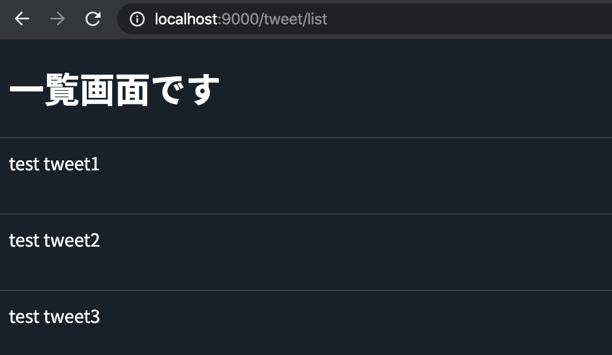
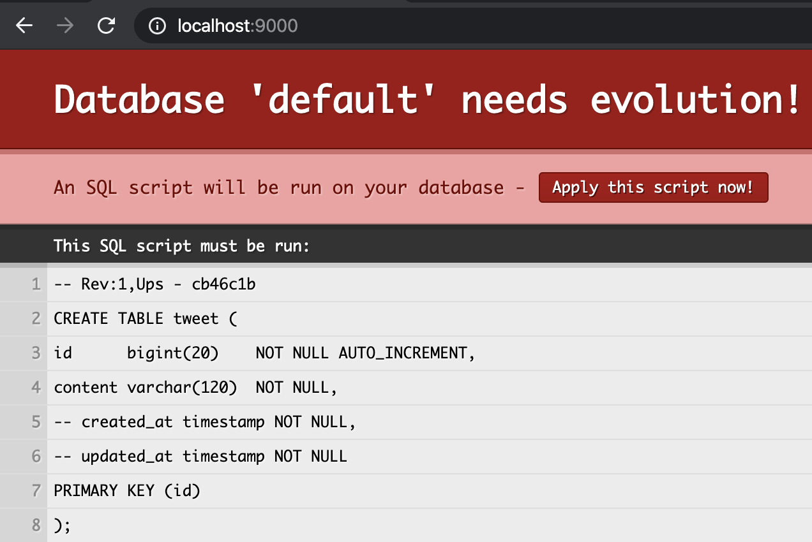
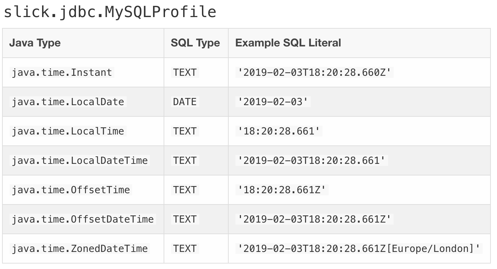
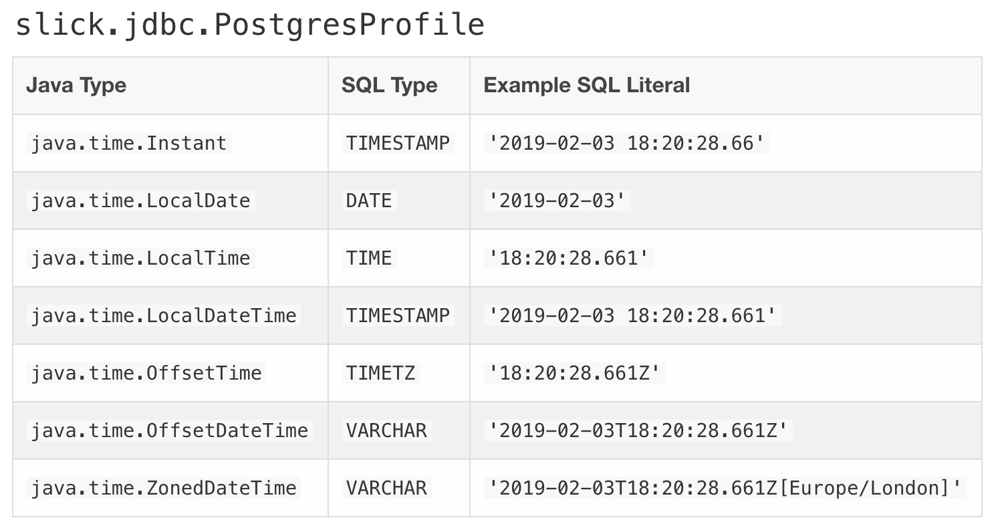
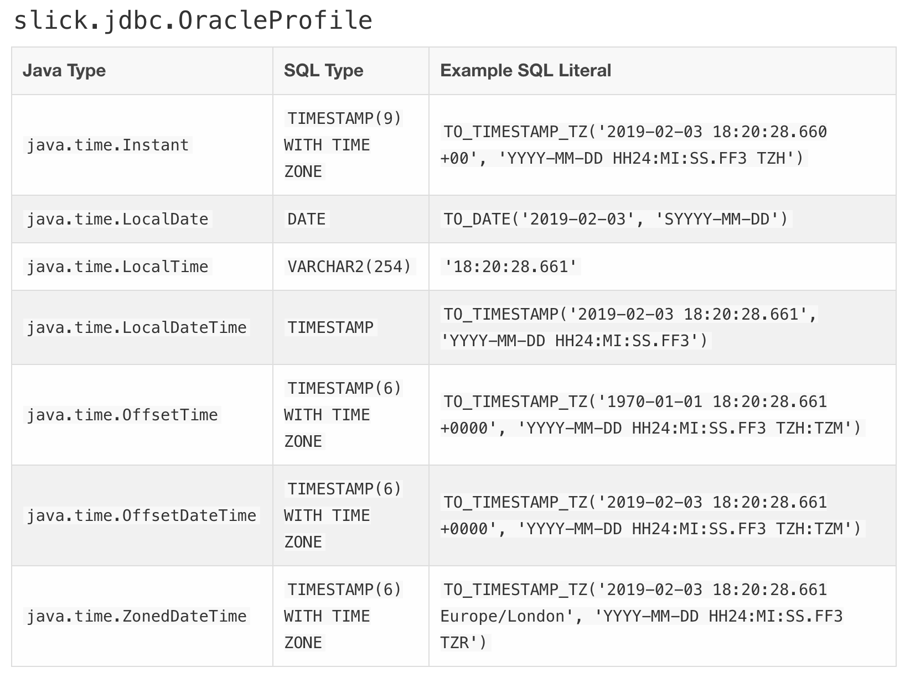
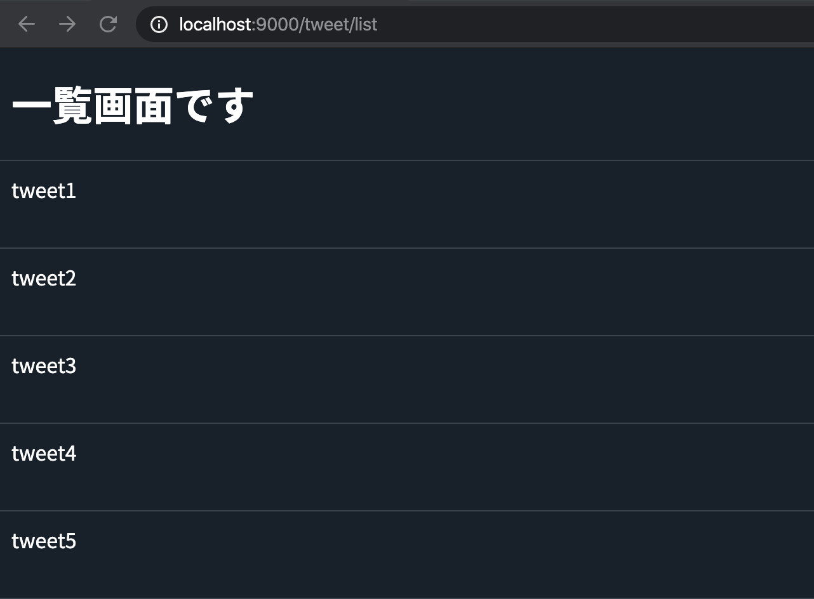

�ンズオン�開発を行����環境をセットアップ���。
Dockerを利用ã�—ã�¦ç’°å¢ƒã‚’作æˆ�ã�—ã�¦ã�„ã‚‹ã�Ÿã‚�ã€�æ‰‹é †å…¼èª¬æ˜�資料ã�¨ã�—ã�¦æœ¬ç« を残ã�—ã�¾ã�™ã€‚
ãƒ�ンズオン用ã�®ãƒ—ãƒã‚¸ã‚§ã‚¯ãƒˆã�«ã�¯Dockerè¨å®šã�Œå®Œäº†ã�—ã�¦ã�„る状態ã�®ã‚‚ã�®ã‚’é…�ç½®ã�—ã�¦ã�„ã‚‹ã�®ã�§ã€�ã�“ã�®ç« ã�¯å¿…ã�šã�—ã‚‚ã�”自身ã�§å¯¾å¿œã�—ã�¦ã�„ã�Ÿã� ã��å¿…è¦�ã�¯ã�‚ã‚Šã�¾ã�›ã‚“。
今後自身ã�§ãƒ—ãƒã‚¸ã‚§ã‚¯ãƒˆã‚’作æˆ�ã�™ã‚‹éš›ã‚„ã€�ãƒ�ンズオン用プãƒã‚¸ã‚§ã‚¯ãƒˆã�®æ§‹æˆ�ã�Œæ°—ã�«ã�ªã‚‹äººã�¯å�‚考ã�«ã�—ã�¦ã�„ã�Ÿã� ã�‘ã‚Œã�°ã�¨æ€�ã�„ã�¾ã�™ã€‚
ã�¾ã�šã�¯Lesson1ã�§ä½œæˆ�ã�—ã�Ÿãƒ—ãƒã‚¸ã‚§ã‚¯ãƒˆã‚’コピーã�—ã�¾ã�™ã€‚
�れ�コンソール�ら�もFinder�ら�も構���ん。
$ cd {repository_root}
$ cp -rp lesson1/example/play-handson lesson2/handson/
# 以後ã�“ã�®ãƒ—ãƒã‚¸ã‚§ã‚¯ãƒˆãƒ«ãƒ¼ãƒˆã�§ä½œæ¥ã‚’è¡Œã�„ã�¾ã�™ã€‚
$ cd lesson2/handson/play-handson
環境ã�¯Dockerを利用ã�—ã�¦ã‚»ãƒƒãƒˆã‚¢ãƒƒãƒ—ã‚’è¡Œã�†ã�Ÿã‚�ã€�Dockerã�Œã‚¤ãƒ³ã‚¹ãƒˆãƒ¼ãƒ«ã�•ã‚Œã�¦ã�„ã�ªã�„å ´å�ˆã�«ã�¯Dockerã�®ã‚¤ãƒ³ã‚¹ãƒˆãƒ¼ãƒ«ã‚’è¡Œã�£ã�¦ã��ã� ã�•ã�„。
Windows: Download
Mac: Download
project_root直下�docker-compose.yamlファイルを作�
以下�内容をdocker-composeファイル�貼り付�
docker-compose.yaml
# docker-composeã�®æ§‹é€ ã�®ãƒ�ージョンを指定 (ç�¾æ™‚点ã�®æœ€æ–°)
version: '3'
# dockerã�§åˆ©ç”¨ã�—ã�Ÿã�„å�„コンテナ(service)ã‚’ã�¾ã�¨ã‚�ã‚‹è¦�ç´
services:
# play-scalaã�¨ã�„ã�†å��å‰�ã‚’ã�¤ã�‘ã�¦ã€�Serviceã‚’è¨å®šã€‚ã�“ã�®ã‚³ãƒ³ãƒ†ãƒŠã�¯playを動作ã�•ã�›ã‚‹ã�Ÿã‚�ã�®ã‚³ãƒ³ãƒ†ãƒŠã�«ã�ªã‚Šã�¾ã�™
play-scala:
# 利用�るimageを指定。今��java8系�動作�るsbt�最新imageを指定�����
image: hseeberger/scala-sbt:8u242_1.3.8_2.13.1
# 特ã�«ã�“ã� ã‚�ã‚Šã�¯ã�ªã�„ã�®ã�§ã€�serviceå��ã�¨containerå��ã‚’å�Œã�˜ã�«ã�—ã�¦ã�„ã�¾ã�™ã€‚
container_name: play-scala
# playã�®ãƒ‡ãƒ•ã‚©ãƒ«ãƒˆåˆ©ç”¨ãƒ�ートã�Œ9000番ã�ªã�®ã�§9000を指定。hostã�‹ã‚‰ã‚‚9000ã�§ã‚¢ã‚¯ã‚»ã‚¹ã�§ã��るよã�†ã�«è¨å®šã�—ã�¦ã�„ã�¾ã�™
ports:
- "9000:9000"
# åˆ�å›�起動時ã�«ã‚ャッシュã�•ã‚Œã‚‹ä¾�å˜ãƒ©ã‚¤ãƒ–ラリ群をã‚ャッシュã�™ã‚‹ã�Ÿã‚�ã�«volumesã�«æŒ‡å®š
volumes:
- .:/source
- ./.ivy2:/root/.ivy2
- ./.sbt:/root/.sbt
- ./.cache:/root/.cache
working_dir: /source
# 端末ã�«å…¥ã�£ã�¦ä½œæ¥ã�™ã‚‹ã�“ã�¨ã�Œå¤šã�„ã�®ã�§ã€�端末を割り当ã�¦ã‚‹
tty: true
# 今後DB�続を行�����ットワーク����る
networks:
- app-net
# 今後play, db間��通信��る���ットワークを構築
networks:
app-net:
driver: bridge
貼り付��行��ら�実際�コンテナを起動��play�動作�る��を確����。
# project_root (docker-compose.yamlファイルã�Œå˜åœ¨ã�™ã‚‹å ´æ‰€) ã�§ä»¥ä¸‹ã�®ã‚³ãƒ�ンドを実行
$ docker-compose up -d
# ... 起動��待��� ...
# 起動を以下�コ�ンドを実行
$ docker-compose ps
# 以下ã�®ã‚ˆã�†ã�«è¡¨ç¤ºã�•ã‚Œã‚Œã�°ã€�æ£å¸¸ã�«èµ·å‹•ã�—ã�¦ã�„ã�¾ã�™ã€‚
# Name Command State Ports
# -----------------------------------------------------
# play-scala bash Up 0.0.0.0:9000->9000/tcp
コンテナ�起動����ら�実際�playを起動�����ょ�。
# play-scala�コンテナ��bash�入���る���bashコンソール�アクセス���
# image�よ���bash�入���������る�����時�� sh ���試�����ょ�
$ docker-compose exec play-scala bash
root@8f6b2156168d:/source# sbt
# ...
# ...
# ... 起動完了後�一度以下�エラー�出����動作�支障�����今��スルー���
[error] server failed to start on local:///root/.sbt/1.0/server/d2c10f28878e8945c341/sock. java.io.IOException: com.sun.jna.LastErrorException: [36] File name too long
# sbt�起動��ら run コ�ンド�サー�を起動�����ょ�
[play-handson] $ run
# ...
# ...
# ... 以下�表示�れ�ら起動完了
# --- (Running the application, auto-reloading is enabled) ---
#
# [info] p.c.s.AkkaHttpServer - Listening for HTTP on /0.0.0.0:9000
#
# (Server started, use Enter to stop and go back to the console...)
Play�起動��らhost��ブラウザ�ら以下�url�らサー��アクセス�����ょ�。
http://localhost:9000
以下�画��表示�れれ�起動��功��。

MySQLを利用ã�™ã‚‹DBã�®docker-composeè¨å®šã‚’è¡Œã�ªã�£ã�¦ã�„ã��ã�¾ã�™ã€‚project_root 直下ã�«ä»¥ä¸‹ã�®ã‚ˆã�†ã�«ãƒ‡ã‚£ãƒ¬ã‚¯ãƒˆãƒª/ファイルを作æˆ�ã�—ã�¦ã��ã� ã�•ã�„。init.sql を作æˆ�ã�—ã�¦ã�„ã�¾ã�™ã�Œã€�ç�¾çŠ¶åˆ©ç”¨ã�—ã�ªã�„ã�Ÿã‚�ä¸èº«ã�¯ç©ºã�®ã�¾ã�¾ã�¨ã�—ã�¦ã�Šã�„ã�¦ã��ã� ã�•ã�„。
docker
└── db
├── Dockerfile
├── init
│ └── init.sql
├── my.cnf
└── mysql_data/
doker/db/Dockerfile を編集������。
以下ã�®ã‚ˆã�†ã�«ãƒ•ã‚¡ã‚¤ãƒ«ã�«è¨˜è¼‰ã�—ã�¦ã��ã� ã�•ã�„。
/docker/db/Dockerfile
# mysql�5.7を使用
FROM mysql:5.7
# imageã�Œdebianã�®ã�Ÿã‚�ã€�apt-getã�§æ—¥æœ¬ã�®localeを追åŠ
RUN apt-get update && \
apt-get install -y locales && \
rm -rf /var/lib/apt/lists/* && \
echo "ja_JP.UTF-8 UTF-8" > /etc/locale.gen && \
locale-gen ja_JP.UTF-8
ENV LC_ALL ja_JP.UTF-8
# docker/db/my.cnfをdockerイメージ上�/etc/...�コピー���置
COPY ./my.cnf /etc/mysql/conf.d/my.cnf
å…ˆã�»ã�©ã�®treeã�®è¨å®šã�¨å�Œæ§˜ã�®ç®‡æ‰€ã�«my.cnfファイルをé…�ç½®ã�—ã�¾ã�™ã€‚
以下ã�®ã‚ˆã�†ã�«ãƒ•ã‚¡ã‚¤ãƒ«ã�«è¨˜è¼‰ã�—ã�¦ã��ã� ã�•ã�„。
/docker/db/my.cnf
[mysqld]
character_set_server=utf8mb4
default_authentication_plugin=mysql_native_password
collation-server=utf8mb4_bin
[mysqldump]
default-character-set=utf8mb4
[mysql]
default-character-set=utf8mb4
docker-compose.yaml ã�«DBã�®Serviceè¨å®šã‚’è¿½åŠ ã�—ã�¾ã�™ã€‚
以下ã�®è¨å®šã‚’ファイルã�«è¿½åŠ ã�—ã�¦ã��ã� ã�•ã�„。
今��twitter_clone������DBを作るよ�������。
db:
build: ./docker/db
ports:
- "3306:3306"
container_name: db
volumes:
# åˆ�期データを投入ã�™ã‚‹SQLã�Œæ ¼ç´�ã�•ã‚Œã�¦ã�„ã‚‹dir
- ./docker/db/init:/docker-entrypoint-initdb.d
# 永続化�る����ウント�るdir
- ./docker/db/mysql_data:/var/lib/mysql
environment:
MYSQL_ROOT_PASSWORD: root
# Container内�データベースを作�
MYSQL_DATABASE: twitter_clone
networks:
- app-net
最終的�以下�よ������れ�OK��。
/docker-compose.yaml
version: '3'
services:
play-scala:
image: hseeberger/scala-sbt:8u242_1.3.8_2.13.1
container_name: play-scala
ports:
- "9000:9000"
volumes:
- .:/source
- ./.ivy2:/root/.ivy2
- ./.sbt:/root/.sbt
- ./.cache:/root/.cache
working_dir: /source
tty: true
networks:
- app-net
db:
build: ./docker/db
ports:
- "3306:3306"
container_name: db
volumes:
# åˆ�期データを投入ã�™ã‚‹SQLã�Œæ ¼ç´�ã�•ã‚Œã�¦ã�„ã‚‹dir
- ./docker/db/init:/docker-entrypoint-initdb.d
# データを永続化�る����ウント�るdirを指定
- ./docker/db/mysql_data:/var/lib/mysql
environment:
MYSQL_ROOT_PASSWORD: root
# DB�
MYSQL_DATABASE: twitter_clone
# timezoneã‚’è¨å®š
TZ: Asia/Tokyo
# play-scala��一�ットワーク上�置�
networks:
- app-net
networks:
app-net:
driver: bridge
è¨å®šã�Œå®Œäº†ã�—ã�Ÿã�Ÿã‚�ã€�Serviceã�®å‹•ä½œã‚’確èª�ã�—ã�¾ã�™ã€‚
$ docker-compose up -d
# ... 起動��待��� ...
# ... 起動完了��ら以下�コ�ンド�ステータスを確� ...
$ docker-compose ps
Name Command State Ports
------------------------------------------------------------------------------------
db docker-entrypoint.sh mysqld Up 0.0.0.0:3306->3306/tcp, 33060/tcp
play-scala bash Up 0.0.0.0:9000->9000/tcp
ã�“ã‚Œã�§Dockerã�®è¨å®šã�¯å®Œäº†ã�§ã�™ã€‚
æ£ã�—ã��è¨å®šã�•ã‚Œã�¦ã�„ã‚‹ã�‹MySQLã�«ã‚¢ã‚¯ã‚»ã‚¹ã�—ã�¦æ¤œè¨¼ã�—ã�¦ã�¿ã�¾ã�—ょã�†ã€‚
$ docker-compose exec db bash
root@703885e52d0c:/# mysql -u root -proot
# ... �略 ...
mysql>
��よ��mysql�アクセス�����れ��功��。
docker/db/mysql_data/*を削除ã�—ã�¦ã�‹ã‚‰ã‚³ãƒ³ãƒ†ãƒŠã�®å†�èµ·å‹•ã‚’ã�™ã‚‹ã�“ã�“ã�‹ã‚‰Playã�®ãƒ—ãƒã‚¸ã‚§ã‚¯ãƒˆã�«DBæ�¥ç¶šç”¨ã�®ãƒ©ã‚¤ãƒ–ラリã�§ã�‚ã‚‹Slickをセットアップã�—ã�¦ã�„ã��ã�¾ã�™ã€‚
今��play-slickやslick-codegenを利用��環境を作�������。
外部ã�®ãƒ©ã‚¤ãƒ–ラリを利用ã�™ã‚‹ã�«ã�¯build.sbtã�®è¨å®šã�Œå¿…è¦�ã�§ã�™ã€‚
Playã�§ã�¯build.sbtã�«ä¾�å˜é–¢ä¿‚ã‚’è¿½åŠ ã�™ã‚‹ã�“ã�¨ã�§ã€�対象ã�®ãƒ©ã‚¤ãƒ–ラリをダウンãƒãƒ¼ãƒ‰ã�—ã�¦åˆ©ç”¨ã�§ã��るよã�†ã�«ã�ªã‚Šã�¾ã�™ã€‚
本ãƒ�ンズオンã�§åˆ©ç”¨ã�™ã‚‹ã‚‚ã�®ã�¨ã�—ã�¦ã€�以下ã�®ä¾�å˜é–¢é–¢ä¿‚ã‚’build.sbtã�¸è¿½åŠ ã�—ã�¦ã��ã� ã�•ã�„。
evolutions,
"com.typesafe.play" %% "play-slick" % "5.0.0",
"com.typesafe.play" %% "play-slick-evolutions" % "5.0.0",
// play-slick�5.0.0��slick 3.3.2を利用���る���codegenも�様�3.3.2を指定�����。
// https://github.com/playframework/play-slick#all-releases
"com.typesafe.slick" %% "slick-codegen" % "3.3.2",
// 指定����ージョン�以下�リンク先
// https://scala-slick.org/doc/3.3.1/database.html
"mysql" % "mysql-connector-java" % "6.0.6",
ä¾�å˜é–¢ä¿‚ã‚’è¿½åŠ ã�™ã‚‹ã�¨build.sbtファイルã�¯ä»¥ä¸‹ã�®ã‚ˆã�†ã�«ã�ªã‚Šã�¾ã�™ã€‚build.sbt
name := """play-handson"""
organization := "com.example"
version := "1.0-SNAPSHOT"
lazy val root = (project in file(".")).enablePlugins(PlayScala)
scalaVersion := "2.13.1"
libraryDependencies ++= Seq(
guice,
evolutions,
"org.scalatestplus.play" %% "scalatestplus-play" % "5.0.0" % Test,
"com.typesafe.play" %% "play-slick" % "5.0.0",
"com.typesafe.play" %% "play-slick-evolutions" % "5.0.0",
// play-slick�5.0.0��slick 3.3.2を利用���る���codegenも�様�3.3.2を指定�����。
// https://github.com/playframework/play-slick#all-releases
"com.typesafe.slick" %% "slick-codegen" % "3.3.2",
// 指定����ージョン�以下�リンク先
// https://scala-slick.org/doc/3.3.1/database.html
"mysql" % "mysql-connector-java" % "6.0.6",
)
è¨å®šã‚’è¿½åŠ ã�—ã�Ÿã‚‰ä¸€åº¦ã�“ã�®è¨å®šã‚’èªã�¿è¾¼ã‚“ã�§ã�¿ã�¾ã�—ょã�†ã€‚
$ cd {project_root}
$ docker-compose exec play-scala bash
/source# sbt update
今å›�è¿½åŠ ã�—ã�Ÿãƒ©ã‚¤ãƒ–ラリã�®ãƒ€ã‚¦ãƒ³ãƒãƒ¼ãƒ‰ã�Œå§‹ã�¾ã‚Œã�°è¨å®šã�¯OKã�§ã�™ã€‚
早速ã�§ã�™ã�Œè¿½åŠ ã�—ã�Ÿãƒ©ã‚¤ãƒ–ラリを使ã�£ã�¦ã�„ã��ã�¾ã�™ã€‚
Slick�ツール��slick-evolutions���DB�イグレーションツール�slick-codegen���DB�ら�モデル実装自動生�ツール��り��。
����evolutionsを利用��DBを�イグレーション������。
evolutions以外��Flyway���も�も広�利用�れ����。
も����らFlyway����よ�使�れ��る�も�れ��ん。
slick-evolutions����通りSlickを経由��DB���続を行���。
ã��ã�®ã�Ÿã‚�ã�¾ã�šã�¯slickã�ŒDBã�¸æ�¥ç¶šã�§ã��るよã�†ã�«è¨å®šã‚’ã�—ã�¦ã�‚ã�’ã‚‹å¿…è¦�ã�Œã�‚ã‚Šã�¾ã�™ã€‚
playã�¯ãƒ‡ãƒ•ã‚©ãƒ«ãƒˆã�§application.confã�®è¨å®šã‚’èªã�¿è¾¼ã‚€ã‚ˆã�†ã�«ã�ªã�£ã�¦ã�„ã‚‹ã�®ã�§ã€�ã�“ã�®ãƒ•ã‚¡ã‚¤ãƒ«ã�«è¨å®šã‚’è¿½åŠ ã�—ã�¦ã�„ã��ã�¾ã�—ょã�†ã€‚
今å›�ã�¯mysqlを利用ã�™ã‚‹ã�®ã�§ä»¥ä¸‹ã�®ã‚ˆã�†ã�«è¨å®šã‚’è¿½åŠ ã�—ã�¦ã��ã� ã�•ã�„。
conf/application.conf
slick.dbs {
default {
# mysql��続�る��profile�MySQL�も�を指定
profile = "slick.jdbc.MySQLProfile$"
db {
driver = com.mysql.cj.jdbc.Driver,
# docker��コンテナ�を指定��通信�能���dbコンテナ�3306�ート経由�通信
url = "jdbc:mysql://db:3306/twitter_clone?useSSL=false",
# docker-compose�指定��も�����る
user = "root",
password = "root",
}
}
}
å…ˆã�»ã�©è¿½åŠ ã�—ã�Ÿè¨å®šã‚’ç°¡å�˜ã�«èª¬æ˜�ã�—ã�¾ã�™ã€‚
slickã�®ãƒ‡ãƒ•ã‚©ãƒ«ãƒˆã�§ã�®å�‚ç…§è¨å®šã�¯slick.dbs.{db_name}.db ã�¨ã�„ã�†ã‚ˆã�†ã�ªæ§‹é€ ã�«ã�ªã�£ã�¦ã�Šã‚Šã€�db_nameã�®éƒ¨åˆ†ã�¯ä»»æ„�ã�«è¨å®šå�¯èƒ½ã�§ã�™ã€‚
ã�“ã�“ã�§è¨å®šã�—ã�Ÿdb_nameã�Œã�“ã�®ã‚·ã‚¹ãƒ†ãƒ 内ã�§ã�®å¯¾è±¡DBã�®å��称ã�¨ã�ªã‚Šã�¾ã�™ã€‚
今��慣習�倣�default������twitter_cloneやmaster, slave�よ���る��も�能��。
urlã�®ä¸ã�§db:3306ã�¨ã�„ã�†ç®‡æ‰€ã�Œã�‚ã‚Šã�¾ã�™ã�Œã€�ã�“ã�®dbã�¯ãƒ�ットワーク上ã�§ã�®hostå��ã�«ã�ªã‚Šã�¾ã�™ã€‚docker-compose.yamlã�§DBå�´ã�®ã‚³ãƒ³ãƒ†ãƒŠã�®ã‚³ãƒ³ãƒ†ãƒŠå��ã‚’dbã�¨ã�—ã�¦ã�„ã‚‹ã�®ã�§ã€�ã��ã�®ã‚³ãƒ³ãƒ†ãƒŠå��ã�§å¯¾è±¡ã�®ã‚µãƒ¼ãƒ�ã�¸ã‚¢ã‚¯ã‚»ã‚¹ã‚’ã�—ã�¦ã�„ã�¾ã�™ã€‚
DBæ�¥ç¶šã�®è¨å®šã�Œã�§ã��ã�Ÿã�®ã�§ã€�次ã�¯DBã�«å¯¾ã�—ã�¦å®Ÿè¡Œã�™ã‚‹SQLを用æ„�ã�—ã�¾ã�™ã€‚
evolutionsã�§ã�¯ãƒ‡ãƒ•ã‚©ãƒ«ãƒˆã�§conf/evolutions/{db_name}/{連番}.sqlã�¨ã�„ã�†ãƒ•ã‚¡ã‚¤ãƒ«ã‚’検索ã�—ã�«ã�„ã��ã�®ã�§ã€�以下ã�®ã‚ˆã�†ã�ªæ§‹é€ ã�§ãƒ•ã‚©ãƒ«ãƒ€/ファイルを作æˆ�ã�—ã�¦ã��ã� ã�•ã�„。
conf
└── evolutions
└── default
└── 1.sql
1.sql�一旦以下�よ��シンプル�形�記載���動作を確�������ょ�。
-- Tweet schema
-- !Ups
CREATE TABLE tweet (
id bigint(20) NOT NULL AUTO_INCREMENT,
content varchar(120) NOT NULL,
-- created_at timestamp NOT NULL,
-- updated_at timestamp NOT NULL
PRIMARY KEY (id)
);
-- !Downs
DROP TABLE tweet;
slickã�§æ—¥ä»˜å‘¨ã‚Šã�®è¨å®šã‚’ã�™ã‚‹ã�®ã�Œå°‘ã�—é�¢å€’ã�ªã�®ã�§ã€�ã�“ã�“ã�§ã�¯ä¸€æ—¦timestampã�®è¨å®šã‚’コメントアウトã�—ã�¦ã�„ã�¾ã�™ã€‚
最終的ã�«ã�¯è¨å®šã�—ã�¦ã�„ã��ã�®ã�§ã�”安心ã��ã� ã�•ã�„。
準備�完了�����実際��イグレーションを実行�����。
evolutionsã�¯ãƒ–ラウザã�‹ã‚‰ãƒ�イグレーションを実行ã�™ã‚‹ä½œã‚Šã�«ã�ªã�£ã�¦ã�„ã‚‹ã�Ÿã‚�ã€�コンテナã�¸ã‚¢ã‚¯ã‚»ã‚¹ã�—ã€�サーãƒ�ã‚’èµ·å‹•ã�—ã�¦ã��ã� ã�•ã�„。
$ docker-compose exec play-scala bash
/source# sbt run
サー��起動���らブラウザ�らPlay�アクセス���。
���る�以下�画��表示�れる�����。

��画��Apply this script now!ボタン�ら�evolutions�実行を許����イグレーションを走ら�る�������。
実際�ボタンを押��実行を����ら�mysql��コンテナ�アクセス��動作を確������ょ�。
$ docker-compose exec db bash
/# mysql -u root -proot
mysql> use twitter_clone
mysql> show tables;
# +-------------------------+
# | Tables_in_twitter_clone |
# +-------------------------+
# | play_evolutions |
# | tweet |
# +-------------------------+
# 2 rows in set (0.01 sec)
��よ��tweetテーブル�作��れ���ら��イグレーション��功��。
一緒�作��れ��るplay_evolutionsテーブル��evolutions���イグレーション�実行状�を管��る���テーブル��り��。
特�気�����大丈夫��。
slick-codegenã�¨ã�„ã�†ã�®ã�¯DBã�®tableæƒ…å ±ã�‹ã‚‰slickã�§åˆ©ç”¨ã�™ã‚‹ãƒ¢ãƒ‡ãƒ«ã‚’自動生æˆ�ã�—ã�¦ã��れるライブラリã�§ã�™ã€‚
codege�コンパイル時�自動実行�sbt command�登録���手動実行��������実行方法��り��。
今å›�ã�¯sbt taskã�¨ã�—ã�¦ç™»éŒ²ã�—ã�¦æ‰‹å‹•å®Ÿè¡Œã�§ã��るよã�†ã�«è¨å®šã�—ã�¦ã��ã�¾ã�™ã�Œã€�sbtã�«ã�¤ã�„ã�¦ã�¯è©³ã�—ã��知らã�ªã�„ã�Ÿã‚�ã€�è¨å®šæ–¹æ³•ã�®ã�¿è¨˜è¿°ã�—詳細ã�«ã�¤ã�„ã�¦ã�¯å‰²æ„›ã�•ã�›ã�¦ã�„ã�Ÿã� ã��ã�¾ã�™ã€‚
ã�¾ã�šã�¯ä»¥ä¸‹ã�®ã‚³ãƒ¼ãƒ‰ã‚’build.sbtã�¸è¿½åŠ ã�—ã�¾ã�™ã€‚
// add code generation task
lazy val slickCodeGen = taskKey[Unit]("execute Slick CodeGen")
slickCodeGen := (runMain in Compile).toTask(" com.example.SlickCodeGen").value
1行目�slickCodeGen������コ�ンド(Task)�インスタンスを作������。
2行目����タスク��対���特定�クラス処�を登録�るよ����を�����。※ 詳細��解������ん。
sbtã�§ã�¯:=を演算å�を利用ã�—ã�¦Keyã�«å¯¾ã�—ã�¦ã�®å®Ÿæ…‹ã‚’定義ã�—ã�¦ã�„ã��ã�¾ã�™ã€‚
ã�“ã�“ã�§ã�¯com.example.SlickCodeGenã�¨ã�„ã�†ã‚¯ãƒ©ã‚¹ã‚’登録ã�—ã�¦ã�„ã�¾ã�™ã�。
�����れ�ら������一致�るクラスを作�������。
ã�¾ã�ŸtoTask()ã�«æ¸¡ã�™ã�¨ã��ã�«ã€�å…ˆé ã�«ã‚¹ãƒšãƒ¼ã‚¹ã‚’è¿½åŠ ã�—ã�¦ã�„ã�¾ã�™ã�Œã€�ã�“ã‚Œã�Œã�ªã�„ã�¨æ£å¸¸ã�«ãƒ•ã‚¡ã‚¤ãƒ«ã�®å‘¼ã�³å‡ºã�—ã�Œè¡Œã�ˆã�¾ã�›ã‚“ã�®ã�§æ³¨æ„�ã�—ã�¦ã��ã� ã�•ã�„。
�れ��早速SlickCodeGen�実行ファイルを作�������。
今å›�ã�¯ä»¥ä¸‹ã�®ãƒ•ã‚¡ã‚¤ãƒ«ã�®è¿½åŠ /変更を行ã�£ã�¦ã�„ã��ã�¾ã�™ã€‚
app/tasks/SlickCodeGen.scala
// Task�登録��も���様�packageを指定
package com.example
import com.typesafe.config.ConfigFactory
import slick.codegen.SourceCodeGenerator
object SlickCodeGen extends App {
// typesafe configを利用ã�—ã�¦application.confã‚’ãƒãƒ¼ãƒ‰
val config = ConfigFactory.load()
val defaultPath = "slick.dbs.default"
// 末尾�$を削除
// s補間å�ã�¤ã��æ–‡å—列ã�§ã�¯${}. $hogeã�§å¤‰æ•°ã‚’å�‚ç…§å�¯èƒ½ã�§ã�™ã€‚ã�“ã�®å ´å�ˆ slick.dbs.default.profileã�®ã‚ˆã�†ã�«å±•é–‹ã�•ã‚Œã�¾ã�™ã€‚
val profile = config.getString(s"$defaultPath.profile").dropRight(1)
val driver = config.getString(s"$defaultPath.db.driver")
val url = config.getString(s"$defaultPath.db.url")
val user = config.getString(s"$defaultPath.db.user")
val password = config.getString(s"$defaultPath.db.password")
// path�別���直�呼�出�
val outputDir = config.getString("slick.codegen.outputDir")
val pkg = config.getString("application.package")
// slick-codegenを実行
SourceCodeGenerator.main(
Array(profile, driver, url, outputDir, pkg, user, password)
)
}
���TypesafeConfig���ライブラリを利用�����。
ã�“ã‚Œã�¯å¤–部ã�®ãƒ©ã‚¤ãƒ–ラリã�«ã�ªã‚‹ã�Ÿã‚�build.sbtã�¸ä¾�å˜é–¢ä¿‚ã‚’è¿½åŠ ã�—ã�¾ã�™ã€‚
build.sbt
"com.typesafe" % "config" % "1.4.0"
ä¾�å˜é–¢ä¿‚ã‚’è¿½åŠ ã�—ã�Ÿã‚‰ã€�SlickCodeGenクラスã�§åˆ©ç”¨ã�—ã�¦ã�„ã‚‹è¨å®šæƒ…å ±ã‚’application.confã�¸è¿½è¨˜ã�—ã�¦ã�„ã��ã�¾ã�™ã€‚
slick {
# slick.dbsをslick�dbs�分離���る��注�
dbs {
default {
profile = "slick.jdbc.MySQLProfile$"
db {
driver = com.mysql.cj.jdbc.Driver,
url = "jdbc:mysql://db:3306/twitter_clone?useSSL=false",
user = "root",
password = "root",
}
}
}
codegen {
# ����.�root directory��る
outputDir = "./output/codegen"
}
}
# DB関係ã�ªã��システム全体ã�§ã�®è¨å®šã�®ã�Ÿã‚�slickã�®å¤–ã�«å®šç¾©ã�—ã�¦ã�„ã�¾ã�™
application {
package = "com.example"
}
slick部分ã�®æ§‹é€ ã�Œå°‘ã�—変更ã�•ã‚Œã�¦ã�„ã‚‹ã�®ã�§æ°—ã‚’ã�¤ã�‘ã�¦ã��ã� ã�•ã�„。
通常ã�®playã�§ã�¯configã�¯Controllerã�¸ã�®DIã�‹ã‚‰åˆ©ç”¨ã�™ã‚‹ã�Ÿã‚�ã€�ç›´æ�¥ãƒãƒ¼ãƒ‰ã�™ã‚‹ã�®ã�¯ã�‚ã�¾ã‚Šå¾¡è¡Œå„€ã�Œè‰¯ã�„ã‚‚ã�®ã�§ã�¯ã�ªã�„ã�®ã�§ã�™ã�Œã€�ãƒ�ッãƒ�プãƒã‚°ãƒ©ãƒ ã�§Controllerを経由ã�§ã��ã�ªã�„ã�“ã�¨ã‚„ã€�ã��ã‚“ã�ªã�«ãƒ†ã‚¹ãƒˆã�™ã‚‹ã‚ˆã�†ã�ªã‚³ãƒ¼ãƒ‰ã�§ã‚‚ã�ªã�„ã�®ã�§ç›´æ�¥å�–り出ã�™ã�“ã�¨ã‚’é�¸æŠ�ã�—ã�¦ã�„ã�¾ã�™ã€‚
ファイルã�®ä¿®æ£ã�Œã�§ã��ã�Ÿã‚‰ã€�早速コãƒ�ンドã�®å®Ÿè¡Œã‚’ã�—ã�¦ã�¿ã�¾ã�—ょã�†ã€‚
$ docker-compose exec play-scala bash
/source# sbt slickCodeGen
コ�ンド�実行��功�る�以下�よ��Tables.scalaファイル�作��れ��。
output
└── codegen
└── com
└── example
└── Tables.scala
今å›�ã�¯evolutionsã�®ãƒ†ãƒ¼ãƒ–ルも対象ã�«å�–られã�¦ã�„ã‚‹ã�Ÿã‚�ã€�ã�‹ã�ªã‚Šã�†ã‚�ã�£...ã�¨ã�ªã‚‹ãƒ•ã‚¡ã‚¤ãƒ«ã�«ã�ªã�£ã�¦ã�„ã‚‹ã�¨æ€�ã�„ã�¾ã�™ã�Œã€�Tweet部分ã�«é™�ã‚Œã�°ä»¥ä¸‹ã�®éƒ¨åˆ†ã� ã�‘ã�§ã�™ã€‚
output/codegen/com/example/Tables.scala
implicit def GetResultTweetRow(implicit e0: GR[Long], e1: GR[String]): GR[TweetRow] = GR{
prs => import prs._
TweetRow.tupled((<<[Long], <<[String]))
}
class Tweet(_tableTag: Tag) extends profile.api.Table[TweetRow](_tableTag, Some("twitter_clone"), "tweet") {
def * = (id, content) <> (TweetRow.tupled, TweetRow.unapply)
def ? = ((Rep.Some(id), Rep.Some(content))).shaped.<>({r=>import r._; _1.map(_=> TweetRow.tupled((_1.get, _2.get)))}, (_:Any) => throw new Exception("Inserting into ? projection not supported."))
val id: Rep[Long] = column[Long]("id", O.AutoInc, O.PrimaryKey)
val content: Rep[String] = column[String]("content", O.Length(120,varying=true))
}
lazy val Tweet = new TableQuery(tag => new Tweet(tag))
Slick�詳細を�解�よ���る�大変�������詳細��������れ�Slick�らTweetテーブルを�作�る���必��コード�用������。
��ファイルを自力�実装�る��ミスも発生��大変����特�慣れ�����codegen�ら生��る��良������。
slick-codegen��TimestampやDatetimeをjava.sql.Timestamp�Mapping�����。
ã�“ã�®ã�¾ã�¾ã� ã�¨ä½¿ã�„ã�¥ã‚‰ã�„ã�®ã�§java.time.LocalDateTimeã�§ãƒ¢ãƒ‡ãƒ«ç”Ÿæˆ�ã�Œè¡Œã‚�れるよã�†ã�«codegenã�®è¨å®šã‚’変更ã�—ã�¦ã�„ã��ã�¾ã�™ã€‚
ã�¾ã�šã�¯conf/evolutions/default/1.sqlã‚’ä¿®æ£ã�—ã�¦ã��ã�¾ã�™ã€‚
日付関連ã�®ãƒ‡ãƒ¼ã‚¿ã‚’æŒ�ã�£ã�¦ã�„ã�ªã�‹ã�£ã�Ÿã�®ã�§ã€�よã��ã�‚る日付å�‹ã‚«ãƒ©ãƒ ã‚’è¿½åŠ ã�—ã�¦ã�„ã��ã�¾ã�—ょã�†ã€‚
ã�¤ã�„ã�§ã�«ã‚·ã‚¹ãƒ†ãƒ ã�‹ã‚‰åˆ©ç”¨ã�™ã‚‹ã�Ÿã‚�ã�®ã‚µãƒ³ãƒ—ãƒ«ãƒ‡ãƒ¼ã‚¿ã‚‚è¿½åŠ ã�—ã�¦ã�„ã�¾ã�™ã€‚
-- Tweet schema
-- !Ups
CREATE TABLE tweet (
id BIGINT(20) NOT NULL AUTO_INCREMENT,
content VARCHAR(120) NOT NULL,
posted_at DATETIME NOT NULL,
created_at TIMESTAMP(6) NOT NULL DEFAULT CURRENT_TIMESTAMP(6),
updated_at TIMESTAMP(6) NOT NULL DEFAULT CURRENT_TIMESTAMP(6) ON UPDATE CURRENT_TIMESTAMP(6),
PRIMARY KEY (id)
);
-- sample data
INSERT INTO tweet(id, content, posted_at) VALUES
(1, 'tweet1', '2020-03-15 13:15:00.012345'),
(2, 'tweet2', '2020-03-15 14:15:00.012345'),
(3, 'tweet3', '2020-03-15 15:15:00.012345'),
(4, 'tweet4', '2020-03-15 16:15:00.012345'),
(5, 'tweet5', '2020-03-15 17:15:00.012345');
-- !Downs
DROP TABLE tweet;
���変更��も���改��sbt run�起動��サー��アクセスを行���最����よ��ブラウザ�ら実行��能��。
今度ã�¯SQLã�«å�ˆã‚�ã�›ã�¦ã€�SlickCodeGen関連ã�®ãƒ•ã‚¡ã‚¤ãƒ«ã‚’ä¿®æ£ã�—ã�¦ã�„ã��ã�¾ã�™ã€‚
今å›�ä¿®æ£ã�™ã‚‹ãƒ•ã‚¡ã‚¤ãƒ«ã�¯ä»¥ä¸‹
app/tasks/CustomSlickCodeGen.scala
package com.example
import com.typesafe.config.ConfigFactory
import slick.codegen.SourceCodeGenerator
import slick.jdbc.MySQLProfile
import slick.jdbc.MySQLProfile.api.Database
import java.time.LocalDateTime
import scala.concurrent.ExecutionContext.Implicits.global
import scala.util.{Success, Failure}
import scala.concurrent.Await
import scala.concurrent.duration.Duration
// object��変更
object CustomSlickCodeGen extends App {
// typesafe configを利用ã�—ã�¦application.confã‚’ãƒãƒ¼ãƒ‰
val config = ConfigFactory.load()
val defaultPath = "slick.dbs.default"
// 末尾�$を削除
val profile = config.getString(s"$defaultPath.profile").dropRight(1)
val driver = config.getString(s"$defaultPath.db.driver")
val url = config.getString(s"$defaultPath.db.url")
val user = config.getString(s"$defaultPath.db.user")
val password = config.getString(s"$defaultPath.db.password")
// path�別���直�呼�出�
val outputDir = config.getString("slick.codegen.outputDir")
val pkg = config.getString("application.package")
// db�続用�インスタンスを生�
val db = Database.forURL(
url = this.url,
driver = this.driver,
user = this.user,
password = this.password
)
// evolutions用�テーブルを対象�ら外�
val ignoreTables = Seq("play_evolutions")
val codegenTargetTables = MySQLProfile.createModel(Some(
MySQLProfile.defaultTables.map(
_.filter(table => !ignoreTables.contains(table.name.name.toLowerCase))
)
))
// モデルを生����対象を渡�
val modelFuture = db.run(codegenTargetTables)
// CustomCodeGeneratorを生�����writeToFile�書�出�
val codegenFuture = modelFuture.map(model => new SourceCodeGenerator(model) {
// LocalDateTimeã�®importを追åŠ
override def code = "import java.time.{LocalDateTime}" + "\n" + super.code
// override table generator
override def Table = new Table(_){
// disable entity class generation for tables with more than 22 columns
override def hugeClassEnabled = false
override def Column = new Column(_){
// datetime�デファオルト�java.sql.Timestamp���る���LocalDateTime�書���
override def rawType = model.tpe match {
case "java.sql.Timestamp" => "LocalDateTime"
case _ => super.rawType
}
}
}
}.writeToFile(profile, outputDir, pkg))
// 処��完了�る��待�
Await.result(codegenFuture, Duration.Inf)
}
// -- build.sbt: slickCodeGenコ�ンド����るクラス�変更
slickCodeGen := (runMain in Compile).toTask(" com.example.CustomSlickCodeGen").value
今å›�ã�®ä¿®æ£ã�¯ã‚„や複雑ã�«ã�ªã�£ã�¦ã�„ã�¾ã�™ã�。
�����実装�入�������注目����イント�1点����1���。
本セクション��目的��る日付��変�を���る部分�����。
override def Column = new Column(_){
// datetime�デファルト�java.sql.Timestamp���る���LocalDateTime�書���
override def rawType = model.tpe match {
case "java.sql.Timestamp" => "LocalDateTime"
case _ => super.rawType
}
}
���Column定義�実装をoverride��差�替�����。
今å›�ã�¯modelã�®å�‹ã‚’caseã�§ãƒ�ェックã�—ã�¦java.sql.Timestampã�®ã�¨ã��ã�«LocalDateTimeã�«ã�ªã‚‹ã‚ˆã�†ã�«å¤‰æ›´ã‚’ã�‹ã�‘ã�¦ã�„ã�¾ã�™ã�。
æ–‡å—列ã�§æŒ‡å®šã�—ã�¦ã�„ã�¾ã�™ã�Œã€�çµ�å±€Codegenã�§ã�¯.scalaã�®æ‹¡å¼µå�ã‚’æŒ�ã�¤ãƒ†ã‚ストファイルを出力ã�—ã�¦ã�„ã‚‹ã� ã�‘ã�ªã�®ã�§ã€�最終æˆ�æ�œç‰©ã�§ã�‚るテã‚スト上ã�§å‡ºåŠ›ã�•ã‚Œã�¦æ¬²ã�—ã�„æ–‡å—列ã�«ç½®ã��æ�›ã�ˆã�¦ã�‚ã�’ã‚Œã�°è‰¯ã�„ã�§ã�™ã€‚
ã�¡ã�ªã�¿ã�«ã€�ã�“ã�®ã�¾ã�¾ã�§ã�¯importã�Œä¸�æ˜�確ã�§å®Ÿéš›ã�«ãƒ—ãƒã‚°ãƒ©ãƒ ã�‹ã‚‰åˆ©ç”¨ã�™ã‚‹ã�¨ã��ã�«ã�¯LocalDateTimeã�Œè¦‹ã�¤ã�‘られã�¾ã�›ã‚“。
ã��ã�®ã�Ÿã‚�ã€�ã��ã�®å°‘ã�—å‰�ã�®éƒ¨åˆ†ã�§ä»¥ä¸‹ã�®ã‚ˆã�†ã�«ã�—ã�¦importæ–‡ã‚’è¿½åŠ ã�—ã�¦ã�„ã�¾ã�™ã€‚
// LocalDateTimeã�®importを追åŠ
override def code = "import java.time.{LocalDateTime}" + "\n" + super.code
ã�“ã‚Œã�¯æœ€çµ‚çš„ã�ªå‡ºåŠ›ã‚³ãƒ¼ãƒ‰ã�®å…ˆé ã�«importã‚’è¿½åŠ ã�—ã�¦ã�„るよã�†ã�ªå‹•ã��ã�«ã�ªã‚Šã�¾ã�™ã€‚
�れ��������説���略����以下�部分�evolutions用�テーブルをモデル作�対象�ら外�����。
// evolutions用�テーブルを対象�ら外�
val ignoreTables = Seq("play_evolutions")
val codegenTargetTables = MySQLProfile.createModel(Some(
MySQLProfile.defaultTables.map(
_.filter(table => !ignoreTables.contains(table.name.name.toLowerCase))
)
))
ã�“ã‚Œã�§evolutionsã�Œå¯¾è±¡ã�‹ã‚‰å¤–ã‚Œã�¦ã€�å°‘ã�—見やã�™ã��ã�ªã‚Šã�¾ã�—ã�Ÿã�。
è¨å®šã�Œã�§ã��ã�Ÿã�®ã�§ã€�改ã‚�ã�¦slick-codegenを実行ã�—ã�¦ã�¿ã�¾ã�—ょã�†ã€‚
# 今��今�����形�実行。
$ docker-compose exec play-scala sbt slickCodeGen
実行後�出力�れ�ファイル�一部���ら
output/codegen/com/example/Tables.scala
// ... �略
import java.time.{LocalDateTime}
// ... �略
/** Database column posted_at SqlType(DATETIME) */
val postedAt: Rep[LocalDateTime] = column[LocalDateTime]("posted_at")
/** Database column created_at SqlType(DATETIME) */
val createdAt: Rep[LocalDateTime] = column[LocalDateTime]("created_at")
/** Database column updated_at SqlType(DATETIME) */
val updatedAt: Rep[LocalDateTime] = column[LocalDateTime]("updated_at")
ã�¡ã‚ƒã‚“ã�¨LocalDateTimeã�«ã�ªã�£ã�¦ã�„ã�¾ã�™ã�。
é•·ã��ã�ªã�£ã�¦ã�—ã�¾ã�„ã�¾ã�—ã�Ÿã�Œã€�ã�“ã‚Œã�§slick-codegenå�´ã�®è¨å®šã�¯ä¸€æ—¦å®Œäº†ã�«ã�ªã‚Šã�¾ã�™ã€‚
基本的ã�ªslickã�®è¨å®šã�Œå®Œäº†ã�—ã�Ÿã�®ã�§ã€�evolutionsã�§ä½œæˆ�ã�•ã‚Œã�Ÿãƒ¢ãƒ‡ãƒ«ã�ªã�©ã‚’利用ã�—ã�ªã�Œã‚‰å®Ÿéš›ã�®ã‚·ã‚¹ãƒ†ãƒ ã�§åˆ©ç”¨ã�™ã‚‹ãƒ¢ãƒ‡ãƒ«ã‚’作æˆ�ã�—ã�¦ã��ã�¾ã�™ã€‚
実装方法�何種���る�����利用��るRDB�応��少�対応方法�変�り��。
今��MySQLを利用���る���れ���記載������。
Slick�RDB���日付関連を扱����利用�る��������。
特ã�«MySQLã�¯ã�»ã�¼å…¨ã�¦æ–‡å—列ã�¨ã�—ã�¦å�–り扱ã�Šã�†ã�¨ã�™ã‚‹ã�Ÿã‚�ã€�ã��ã�®ã�¾ã�¾ã�®çŠ¶æ…‹ã�§ã�¯åˆ©ç”¨ã�—ã�¥ã‚‰ã��ã�ªã�£ã�¦ã�—ã�¾ã�„ã�¾ã�™ã€‚
今å›�ã�¯ã�“ã�®éƒ¨åˆ†ã‚’自å‰�ã�®è¿½åŠ 実装ã�§å�¸å��ã�—ã�¦ã�„ã��ã�Ÿã�„ã�¨æ€�ã�„ã�¾ã�™ã€‚
対応方法�何種���る�����今�������用����方法�実装��行���。
ã�Šã�¾ã�‘部分ã�§ä»–ã�®å®Ÿè£…方法ã�«ã�¤ã�„ã�¦ã‚‚紹介ã�—ã�¾ã�™ã�®ã�§ã€�æ°—ã�«ã�ªã‚‹æ–¹ã�¯ã�Šã�¾ã�‘ã‚’ã�”覧ã��ã� ã�•ã�„。
RDB�������り�����実際�確������。
以下ã�®ãƒªãƒ³ã‚¯ã�‹ã‚‰å…¬å¼�サイトã�®æƒ…å ±ã�Œç¢ºèª�ã�§ã��ã�¾ã�™ã�Œã€�リンク先ã�®æƒ…å ±ã�®ç”»åƒ�ã‚‚å�ˆã‚�ã�›ã�¦è¼‰ã�›ã�¦ã�Šã��ã�¾ã�™ã€‚
https://scala-slick.org/doc/3.3.1/upgrade.html#support-for-java.time-columns
[MySQLã�®å ´å�ˆ]

[Postgresã�®å ´å�ˆ]

[Oracleã�®å ´å�ˆ] 
��よ���れ�れ日付����割り当�られ�SQL Type�差��り��。
ç´°ã�‹ã�„ã�“ã�¨ã�¯ä¸�æ˜�ã�§ã�™ã�Œå�³å¯†ã�«ã‚„ã‚�ã�†ã�¨ã�™ã‚‹ã�¨MySQLã�Œæ—¥ä»˜é–¢é€£ã�®ãƒ‡ãƒ¼ã‚¿ã�®æŒ�ã�¡æ–¹ã�«æŒ¯ã‚Œå¹…ã�Œå¤§ã��ã��ã�¦parserã�Œçµ±ä¸€ã�§ã��ã�ªã�‹ã�£ã�Ÿã�®ã�‹ã‚‚ã�—ã‚Œã�ªã�„ã�§ã�™ã�。 (ã‚�ã�‹ã‚Šã�¾ã�›ã‚“ã�Œ)
特�何も対応���今����状態�実装を進�る�DBアクセスを行���タイミング�以下�よ��エラー��り��。
play.api.http.HttpErrorHandlerExceptions$$anon$1: Execution exception[[DateTimeParseException: Text '2020-03-15 13:15:00' could not be parsed at index 10]]
at play.api.http.HttpErrorHandlerExceptions$.throwableToUsefulException(HttpErrorHandler.scala:332)
at play.api.http.DefaultHttpErrorHandler.onServerError(HttpErrorHandler.scala:251)
at play.core.server.AkkaHttpServer$$anonfun$2.applyOrElse(AkkaHttpServer.scala:421)
at play.core.server.AkkaHttpServer$$anonfun$2.applyOrElse(AkkaHttpServer.scala:417)
at scala.concurrent.impl.Promise$Transformation.run(Promise.scala:453)
at akka.dispatch.BatchingExecutor$AbstractBatch.processBatch(BatchingExecutor.scala:55)
at akka.dispatch.BatchingExecutor$BlockableBatch.$anonfun$run$1(BatchingExecutor.scala:92)
at scala.runtime.java8.JFunction0$mcV$sp.apply(JFunction0$mcV$sp.scala:18)
at scala.concurrent.BlockContext$.withBlockContext(BlockContext.scala:94)
at akka.dispatch.BatchingExecutor$BlockableBatch.run(BatchingExecutor.scala:92)
Caused by: java.time.format.DateTimeParseException: Text '2020-03-15 13:15:00' could not be parsed at index 10
at java.time.format.DateTimeFormatter.parseResolved0(DateTimeFormatter.java:1949)
at java.time.format.DateTimeFormatter.parse(DateTimeFormatter.java:1851)
at java.time.LocalDateTime.parse(LocalDateTime.java:492)
at java.time.LocalDateTime.parse(LocalDateTime.java:477)
at slick.jdbc.MySQLProfile$JdbcTypes$$anon$4.getValue(MySQLProfile.scala:404)
at slick.jdbc.MySQLProfile$JdbcTypes$$anon$4.getValue(MySQLProfile.scala:389)
at slick.jdbc.SpecializedJdbcResultConverter$$anon$1.read(SpecializedJdbcResultConverters.scala:26)
at slick.jdbc.SpecializedJdbcResultConverter$$anon$1.read(SpecializedJdbcResultConverters.scala:24)
at slick.relational.ProductResultConverter.read(ResultConverter.scala:54)
at slick.relational.ProductResultConverter.read(ResultConverter.scala:44)
���部分�以下�部分��。Execution exception[[DateTimeParseException: Text '2020-03-15 13:15:00' could not be parsed at index 10]]
日付å�‹ã�®parseã�§ã‚¨ãƒ©ãƒ¼ã�«ã�ªã�£ã�¦ã�„ã�¾ã�™ã�。
���ら少�難���る�������エラーを調査������。
エラー調査ã�®ã�Ÿã‚�ã�«ã€�å…ˆã�»ã�©ã�®ãƒã‚°ã‚’ã‚‚ã�†å°‘ã�—ç´°ã�‹ã��ã�¿ã�¦ã�¿ã�¾ã�—ょã�†ã€‚
���る�以下�よ��出力を見��る�����る�����。at slick.jdbc.MySQLProfile$JdbcTypes$$anon$4.getValue(MySQLProfile.scala:389)
�れ�今�エラー�発生���る箇所��。
��slic.jdbc.MySQLProfile����利用�れ��る������codegen�自動生���Model��り��。
codegenã�§ç”Ÿæˆ�ã�•ã‚Œã�Ÿã‚³ãƒ¼ãƒ‰ã‚’見ã�¦ã�¿ã‚‹ã�¨ã€�以下ã�®ã‚ˆã�†ã�«MySQLProfileを利用ã�—ã�¦ã�„ã‚‹ã�¨ã�“ã‚�ã�Œã�‚ã‚Šã�¾ã�™ã�。
object Tables extends {
val profile = slick.jdbc.MySQLProfile
} with Tables
ã�“ã�“ã�§èªã�¿è¾¼ã‚“ã� profileã�§å®Ÿè£…ã�•ã‚Œã�¦ã�„ã‚‹LocalDateTimeã�®getValueã�¨ã�„ã�†ã�¨ã�“ã‚�ã�«å•�é¡Œã�Œã�‚ã‚‹ã�¨ã�„ã�†ã‚�ã�‘ã�§ã�™ã€‚
���引�続�コードを追�����ょ�。
早速MySQLProfile�getValueを見�����。
以下����コード��。
override val localDateTimeType : LocalDateTimeJdbcType = new LocalDateTimeJdbcType {
override def sqlType : Int = {
java.sql.Types.VARCHAR
}
override def setValue(v: LocalDateTime, p: PreparedStatement, idx: Int) : Unit = {
p.setString(idx, if (v == null) null else v.toString)
}
// 今�エラー�発生���る����メソッド
override def getValue(r: ResultSet, idx: Int) : LocalDateTime = {
r.getString(idx) match {
case null => null
// 具体的���� parse 処�部分��。
case iso8601String => LocalDateTime.parse(iso8601String)
}
}
override def updateValue(v: LocalDateTime, r: ResultSet, idx: Int) = {
r.updateString(idx, if (v == null) null else v.toString)
}
override def valueToSQLLiteral(value: LocalDateTime) : String = {
stringToMySqlString(value.toString)
}
}
LocalDateTimeã�®å€¤ã‚’getValueを見ã�¦ã��ã� ã�•ã�„。
ã�“ã�®ä¸ã�§DBã�‹ã‚‰å�—ã�‘å�–ã�£ã�Ÿæ—¥ä»˜ã�®æ–‡å—列をparseã�—ã�¦ã�„ã�¾ã�™ã€‚
今�����エラー�出�������������。
LocalDateTime.parseã�®ãƒ‡ãƒ•ã‚©ãƒ«ãƒˆãƒ•ã‚©ãƒ¼ãƒ�ットã�¯yyyy-MM-ddTHH:mm:ssã�¨ã�„ã�†ãƒ•ã‚©ãƒ¼ãƒ�ットã�«ã�ªã�£ã�¦ã�„ã‚‹ã�Ÿã‚�ã€�ã�“ã�®ãƒ•ã‚©ãƒ¼ãƒ�ットã�«å�ˆã‚�ã�ªã�„日付文å—列ã�¯å…¨ã�¦parseã�§è�½ã�¡ã�¦ã�—ã�¾ã�„ã�¾ã�™ã€‚
今å›�ã�®å ´å�ˆyyyy-MM-dd HH:mm:ssã�®æ–‡å—列ã�§æ¸¡ã�£ã�¦ã�—ã�¾ã�†ã�Ÿã‚�Tã�Œè¶³ã‚Šã�¦ã�Šã‚‰ã�šã€�エラーã�«ã�ªã�£ã�¦ã�—ã�¾ã�†ã‚�ã�‘ã�§ã�™ã�。
indexも�ょ��10番目��。
エラーã�®å†…容ã�¨å�Ÿå› ã�Œã‚�ã�‹ã�£ã�Ÿã�®ã�§ã€�次ã�¯ã�“れを解決ã�—ã�¦ã�„ã��ã�¾ã�—ょã�†ã€‚
���対応方�を決�る必���り��。
詳細�����割愛�����対応方����考�られるも����3����り��。
def *���自�実装�る�れ�れメリット/デメリット����る用途����り����今��３番目�独自Profileを実装�る方��対応を�����������。
ã�“ã�®æ–¹æ³•ã‚’é�¸æŠ�ã�™ã‚‹ç�†ç”±ã�¯ã‚·ãƒ³ãƒ—ルã�«å…¬å¼�æ�¨å¥¨ã� ã�‹ã‚‰ã�§ã�™ã€‚
ç§�ã�¯ä¸€ç•ªç�†è§£ã�—ã‚„ã�™ã�„ã�®ã�¯1番ã� ã�¨è€ƒã�ˆã�¦ã�„ã�¦ã€�ã��ã‚Œã�Œrookies資料ã�¨ã�—ã�¦ã�¯é�©åˆ‡ã�ªã�®ã�§ã�¯ã�¨æ‚©ã�¿ã�¾ã�—ã�Ÿã€‚
ã�Ÿã� ã€�å…¨ã�¦ã�®ãƒ†ãƒ¼ãƒ–ルã�®ãƒ¢ãƒ‡ãƒ«ã�®mappingを書ã�„ã�¦ã�„ã��ã�®ã�¯åŠ¹ç�‡ã�Œæ‚ªã�™ã��ã‚‹ã�®ã�¨ã€�å…¬å¼�ã�Œæ�¨å¥¨ã�™ã‚‹å½¢ã�Œä¸€ç•ªå¾¡è¡Œå„€ã�Œè‰¯ã�„ã�¨æ€�ã�†ã�®ã�§ã€�Profileæ‹¡å¼µã�§ä½œæˆ�ã‚’ã�—ã�¦ã�„ã��ã�Ÿã�„ã�¨æ€�ã�„ã�¾ã�™ã€‚
ã�¨ã�¯ã�„ã�ˆã€�Profileæ‹¡å¼µã�¨ã�„ã�†è¨€è‘‰ã�®æŒ�ã�¤ãƒ‘ワーã�®ã�›ã�„ã�§é›£ã�—ã�„æ°—ã�Œã�™ã‚‹ã� ã�‘ã�§ã€�実ã�¯LocalDateTime.parseã�®å¼•æ•°ã�«æ¸¡ã�™formatterを実装ã�™ã‚‹ã� ã�‘ã�¨ã�„ã�†è¶…シンプル対応ã�§ã‚‚ã�‚ã‚Šã�¾ã�™ã€‚
ã�‚ã�¾ã‚Šé›£ã�—ã��考ã�ˆã�šã�«ã€Œæ—¢å˜å®Ÿè£…コピペã�—ã�¦LocalDateTimeã�®formatterã� ã�‘ç›´ã�™ã€�ã�¨æ€�ã�£ã�¦ã�„ã�Ÿã� ã�‘ã‚Œã�°ã€�心ç�†çš„è² è�·ã�¯æ¸›ã‚‹ã�®ã�‹ã�ªã�¨æ€�ã�„ã�¾ã�™ã€‚
���独自Profile�実装を������ょ�。
先���話���よ��公��実装方法�書�れ��る�����らを�照������。
https://scala-slick.org/doc/3.3.1/upgrade.html#support-for-java.time-columns
æ–‡ç« ã�§ã�„ã�†ã�¨ä»¥ä¸‹ã�®éƒ¨åˆ†ã�§ã�™ã�。
If you need to customise these formats, you can by extending a Profile and overriding the appropriate methods.
For an example of this see: https://github.com/d6y/instant-etc/blob/master/src/main/scala/main.scala#L9-L45.
Also of use will be an example of a full mapping, such as: https://github.com/slick/slick/blob/v3.3.0/slick/src/main/scala/slick/jdbc/JdbcTypesComponent.scala#L187-L365.
��公�実装�H2DBを元�書�れ��る����れを�考�MySQL�コードを作������。
公��拡張実装��以下�MySQLProfile�実装を比較���ら対応�������りや�������。
MySQLProfile.scala#L389-L415
���以下�最終的�実装を記載���。
app/slick/profile/MyDBProfile.scala
package slick.profile
import java.time.format.DateTimeFormatter
import java.time.LocalDateTime
import java.time.format.DateTimeFormatterBuilder
import java.time.temporal.ChronoField
/* LocalDateTimeをプãƒãƒ€ã‚¯ãƒˆã�«é�©ã�—ã�Ÿå½¢ã�«å‡¦ç�†ã�§ã��るよã�†ã�«Profileè¨å®šã‚’独自ã�«æ‹¡å¼µ */
trait MyDBProfile extends slick.jdbc.JdbcProfile with slick.jdbc.MySQLProfile {
import java.sql.{PreparedStatement, ResultSet}
import slick.ast.FieldSymbol
@inline
private[this] def stringToMySqlString(value : String) : String = {
value match {
case null => "NULL"
case _ =>
val sb = new StringBuilder
sb append '\''
for(c <- value) c match {
case '\'' => sb append "\\'"
case '"' => sb append "\\\""
case 0 => sb append "\\0"
case 26 => sb append "\\Z"
case '\b' => sb append "\\b"
case '\n' => sb append "\\n"
case '\r' => sb append "\\r"
case '\t' => sb append "\\t"
case '\\' => sb append "\\\\"
case _ => sb append c
}
sb append '\''
sb.toString
}
}
override val columnTypes = new JdbcTypes
// Customise the types...
class JdbcTypes extends super.JdbcTypes {
// Postgres�Profileを�考�ミリ秒も���対応��るformatterを実装
private[this] val formatter = {
new DateTimeFormatterBuilder()
.append(DateTimeFormatter.ofPattern("yyyy-MM-dd HH:mm:ss"))
.optionalStart()
.appendFraction(ChronoField.NANO_OF_SECOND,0,9,true)
.optionalEnd()
.toFormatter()
}
override val localDateTimeType : LocalDateTimeJdbcType = new LocalDateTimeJdbcType {
override def sqlType : Int = {
java.sql.Types.VARCHAR
}
override def setValue(v: LocalDateTime, p: PreparedStatement, idx: Int) : Unit = {
p.setString(idx, if (v == null) null else v.toString)
}
override def getValue(r: ResultSet, idx: Int) : LocalDateTime = {
r.getString(idx) match {
case null => null
// æ–‡å—列ã�‹ã‚‰æ—¥ä»˜å�‹ã�«ãƒ‘ースã�§ã��るよã�†ã�«parseã�«formatterを渡ã�™
case dateString => LocalDateTime.parse(dateString, formatter)
}
}
override def updateValue(v: LocalDateTime, r: ResultSet, idx: Int) = {
r.updateString(idx, if (v == null) null else v.toString)
}
override def valueToSQLLiteral(value: LocalDateTime) : String = {
stringToMySqlString(value.toString)
}
}
}
}
object MyDBProfile extends MyDBProfile
çµ�構ã�ªã‚³ãƒ¼ãƒ‰é‡�ã�«è¦‹ã�ˆã�¾ã�™ã�Œã€�ã�»ã�¨ã‚“ã�©ã‚³ãƒ”ペã�—ã�Ÿã� ã�‘ã�§ã�™ã€‚
大事ã�ªéƒ¨åˆ†ã�¯ä»¥ä¸‹ã�®ãƒ‘ース部分ã�§ã�™ã�。
case dateString => LocalDateTime.parse(dateString, formatter)
ã�»ã�¨ã‚“ã�©ã�¯å…ƒã�®MySQLProfileã�®å®Ÿè£…をコピーã�—ã�¦æŒ�ã�£ã�¦ã��ã�¦ã�„ã‚‹ã� ã�‘ã�§ã�™ã€‚
ã�—ã�‹ã�—LocalDateTimeã�®parse処ç�†ã�Œä¿®æ£ã�•ã‚Œã�¦ã�„ã‚‹ã�®ã�§ã€�ã�“ã�®Profileを利用ã�—ã�¦Slickã�«è¨å®šã�™ã‚Œã�°ç‰¹ã�«ä»–ã�«ã�¯ä½•ã‚‚ã�™ã‚‹ã�“ã�¨ã�ªã��LocalDateTimeã�Œãƒ¢ãƒ‡ãƒ«ã�«ãƒ�ッピングã�§ã��るよã�†ã�«ã�ªã‚Šã�¾ã�™ã€‚
ã�¡ã‚‡ã�£ã�¨è©±ã�¯é€¸ã‚Œã�¾ã�™ã�Œ.appendFraction便利ã�§ã�™ã�。
LocalDateTimeã�®parseã�¯ãƒŸãƒªç§’ã�«ã�¤ã�„ã�¦ã�¯ä¸€å¾‹ã�§è¨å®šã�™ã‚‹æ–¹æ³•ã�Œã�ªã��ã€�ミリ秒ã�®æ•°ã� ã�‘SSSSSSã�¿ã�Ÿã�„ã�«æ›¸ã�‹ã�ªã�„ã�¨ã�„ã�‘ã�ªã�„ã�®ã�§LocalDateTimeå�´ã�®ãƒ¡ã‚½ãƒƒãƒ‰ã�§å‡¦ç�†ã�—ã�¦ã‚‚らã�ˆã‚‹ã�¨åŠ©ã�‹ã‚Šã�¾ã�™ã€‚
��0-9���指定�����る���MySQL��ミリ秒以下�1��も�る�0埋���9���������る�ら��。
MySQL自体�6����精度����(��)��。
少�長��り����日付対応��れ�完了��。
最後�今��作���モデルやProfileを利用���slick����を行����モデルを作�������。
�����実装�play-slick�関係��slick�レイヤー��実装���。
���ら�play-slick�機能を利用���モデル作��ら簡��データ�得��進����������。
実����りよ����������������も�もplay-slick���ん����ょ��。
ã�¨è¨€ã�†ã�“ã�¨ã�§ã€�å…¬å¼�æƒ…å ±ã‚’å¼•ç”¨ã�•ã�›ã�¦ã�„ã�Ÿã� ã��ã�¾ã�™ã€‚
The Play Slick module makes Slick a first-class citizen of Play, and consists of two primary features:
・Integration of Slick into Play's application lifecycle.
・Support for Play database evolutions.
evolutionsをサ�ート���る������比較的���も����も�片方�注目���。
ç§�ã‚‚ã�ªã‚“ã�¨ã�ªã��æ€�ã�£ã�¦ã�¾ã�—ã�Ÿã�Œã€�ã‚„ã�£ã�±ã‚Šslickã‚’playã�®ãƒ©ã‚¤ãƒ•ã‚µã‚¤ã‚¯ãƒ«ã�®ä¸ã�«çµ„ã�¿è¾¼ã‚“ã�§ã��れるã�®ã�Œplay-slickã�®ã‚ˆã�†ã�§ã�™ã€‚
è¨å®šæƒ…å ±ã�‹ã‚‰DB connectionを作æˆ�ã�—ã�Ÿã‚Šç ´æ£„ã�—ã�Ÿã‚Šã�®ç®¡ç�†ã‚’良ã�„æ„Ÿã�˜ã�«ã‚„ã�£ã�¦ã��れるもã�®ã€�ã��らã�„ã�®èª�è˜ã�§è‰¯ã�„ã�®ã�§ã�¯ã�ªã�„ã�‹ã�¨æ€�ã�„ã�¾ã�™ã€‚
ã�ªã�®ã�§ã€�ä»–ã�®ãƒ¢ãƒ‡ãƒ«ã�§ã�‚ã�£ã�Ÿã‚Šå…ˆã�»ã�©ã�¾ã�§ä½œæˆ�ã�—ã�¦ã�„ã�Ÿprofileã�ªã�©ãƒ©ã‚¤ãƒ•ã‚µã‚¤ã‚¯ãƒ«ã�¨é–¢ä¿‚ã�ªã�„部分ã�¯é€šå¸¸ã�®slickã�¨å¤‰ã‚�らã�ªã�„ã�¨è¨€ã�†ã�“ã�¨ã�§ã�™ã�。
�����ライフサイクル�云々�����コード上���る�を確������。
公�サイト�ページ����らを�照
å…¬å¼�サイトã�®ä¾‹ã�§ã�¯controllerã�«å¯¾ã�—ã�¦DIã�™ã‚‹ã‚ˆã�†ã�ªå®Ÿè£…ã�«ã�ªã�£ã�¦ã�„ã�¾ã�™ã�。
以下�����「サンプルコード��実際�利用�るコード���り��ん����実装を今�TweetController��用�る以下�よ��実装��り��。(実装�る必���り��ん)
app/controllers/tweet/TweetController.scala
@Singleton
class TweetController @Inject()(
protected val dbConfigProvider: DatabaseConfigProvider, // play-slick
val controllerComponents: ControllerComponents
)(implicit ec: ExecutionContext)
extends BaseController
with I18nSupport
with HasDatabaseConfigProvider[JdbcProfile]{ // play-slick
// HasDatabaseConfigProvider���profile�らapiを�得
// slick�������slick.jdbc.MySQLProfile.api._
import profile.api._
// ...�略...
}
// play-slick �コメントを書��部分�play-slick用�実装��。
実装ã�®å®Ÿæ…‹ã�¯HasDatabaseConfigProviderã�ŒæŒ�ã�£ã�¦ã�„ã�¦ã€�ã��ã�®ä¸ã�§åˆ©ç”¨ã�•ã‚Œã�¦ã�„る変数ã�¨ã�—ã�¦DatabaseConfigProviderã�Œã�„ã�¾ã�™ã€‚
ã�“ã�®DatabaseConfigProviderã‚’play-slickã�Œè¨å®šãƒ•ã‚¡ã‚¤ãƒ«ã�‹ã‚‰çµ„ã�¿ç«‹ã�¦ã�¦Injectã€�ã��ã�®çµ�æ�œé�©åˆ‡ã�ªprofileã‚’èªã�¿å�–れるよã�†ã�«ã�ªã‚‹ã�¨ã�„ã�†ä»•çµ„ã�¿ã�§ã�™ã€‚
Controllerクラス内部�import dbConfig.profile.api._�部分�Profile�らslick�処��必��機能をimport���る部分��り��。
コメントã�«ã‚‚記載ã�Œã�‚ã‚Šã�¾ã�™ã�Œã€�ã��ã�®ã�¾ã�¾ã�®slickã� ã�¨import slick.profile.MySQLProfile.api._ã�®ã‚ˆã�†ã�«åˆ©ç”¨ã�—ã�¦ã‚‹ã‚‚ã�®ã�«ã�‚ã�Ÿã‚Šã�¾ã�™ã€‚
play-slickを利用ã�™ã‚‹ã�“ã�¨ã�§RDBã�®é�•ã�„ã‚’ç°¡å�˜ã�«è¨å®šãƒ•ã‚¡ã‚¤ãƒ«ã�«éš 蔽ã�™ã‚‹ã�“ã�¨ã�Œã�§ã��ã�¾ã�™ã�。
�����play-slickを利用��実際�コードを書������。
今å›�ã�¯play-slickã�®ã‚µãƒ³ãƒ—ルプãƒã‚¸ã‚§ã‚¯ãƒˆã‚’å�‚考ã�«Repositoryレイヤーを作æˆ�ã�™ã‚‹å½¢ã�§å®Ÿè£…ã‚’è¡Œã�£ã�¦ã�„ã��ã�¾ã�™ã€‚
���紹介��DatabaseConfigProvider関連�DIもController����Repository�対��行������ょ�。
�������Tweet Table�アクセス�る���必��クラスを作�������。
slick-codege�作���クラスや�play-slick�サンプルを�考����ら作�������。
���モデル作����������元々作��れ���Tweetモデルを移動����在�table�����調整を���。
app/models/Tweet.scala -> app/slick/models/Tweet.scala
package slick.models
import java.time.LocalDateTime
// case class�����説���略
// �考: https://docs.scala-lang.org/ja/tour/case-classes.html
case class Tweet(
id: Option[Long],
content: String,
postedAt: LocalDateTime = LocalDateTime.now,
createdAt: LocalDateTime = LocalDateTime.now,
updatedAt: LocalDateTime = LocalDateTime.now
)
※ コンパイルã�™ã‚‹ã�¨models.Tweetを利用ã�—ã�¦ã�„ã�Ÿç®‡æ‰€ã�§ã‚¨ãƒ©ãƒ¼ã�«ã�ªã‚‹ã�®ã�§ã€�é�©å®œä¿®æ£ã�—ã�¦ã��ã� ã�•ã�„。slick.ã‚’ã�¤ã�‘ã�¦ã�‚ã�’ã‚‹ã� ã�‘ã�§å¤§ä¸ˆå¤«ã�ªã�¯ã�šã�§ã�™ã€‚
次�Repositoryを作�������ょ�。
��実際�以下�ページを�考�実装�����。
Play公��サンプル���引用�れ��る実装
app/slick/repositories/TweetRepository.scala
package slick.repositories
import java.time.LocalDateTime
import play.api.db.slick.{HasDatabaseConfigProvider,DatabaseConfigProvider}
import javax.inject.{Inject, Singleton}
import slick.jdbc.{JdbcProfile, GetResult}
import scala.concurrent.{Future, ExecutionContext}
import slick.models.Tweet
@Singleton
class TweetRepository @Inject()(
protected val dbConfigProvider: DatabaseConfigProvider
)(implicit ec: ExecutionContext)
extends HasDatabaseConfigProvider[JdbcProfile] {
import profile.api._
private val tweet = new TableQuery(tag => new TweetTable(tag))
// ########## [DBIO Methods] ##########
/**
* tweetを全件�得
*/
def all(): Future[Seq[Tweet]] = db.run(tweet.result)
// ########## [Table Mapping] ##########
private class TweetTable(_tableTag: Tag) extends Table[Tweet](_tableTag, Some("twitter_clone"), "tweet") {
// Table��カラム�ッピング
val id: Rep[Long] = column[Long]("id", O.AutoInc, O.PrimaryKey)
val content: Rep[String] = column[String]("content", O.Length(120,varying=true))
val postedAt: Rep[LocalDateTime] = column[LocalDateTime]("posted_at")
val createdAt: Rep[LocalDateTime] = column[LocalDateTime]("created_at")
val updatedAt: Rep[LocalDateTime] = column[LocalDateTime]("updated_at")
// Plain SQL�データ�得を行�用��ッピング
implicit def GetResultTweet(implicit e0: GetResult[Long], e1: GetResult[String], e2: GetResult[LocalDateTime]): GetResult[Tweet] = GetResult{
prs => import prs._
Tweet.tupled((Some(<<[Long]), <<[String], <<[LocalDateTime], <<[LocalDateTime], <<[LocalDateTime]))
}
// model -> db用タプル, db�ら�データ -> model�変�を記述�る処�
// O.PrimaryKey�ColumnOptionType��る��id.?�idをOption����り扱��能
def * = (id.?, content, postedAt, createdAt, updatedAt) <> (Tweet.tupled, Tweet.unapply)
def ? = ((Rep.Some(id), Rep.Some(content), Rep.Some(postedAt), Rep.Some(createdAt), Rep.Some(updatedAt))).shaped.<>({r=>import r._; _1.map(_=> Tweet.tupled((Option(_1.get), _2.get, _3.get, _4.get, _5.get)))}, (_:Any) => throw new Exception("Inserting into ? projection not supported."))
}
}
少�長���������一���説�������。
��クラス宣言�部分��。
@Singleton
class TweetRepository @Inject()(
protected val dbConfigProvider: DatabaseConfigProvider
)(implicit ec: ExecutionContext)
extends HasDatabaseConfigProvider[JdbcProfile] {
import profile.api._
��部分��段�説���Controller�実装�������。
Repository�インスタンスを複数��必����(��も�)��@Singleton を付����Singletonオブジェクト������。
ã�¾ã�Ÿä»Šå›�(implicit ec: ExecutionContext)ã�®è¨˜è¿°ã‚‚è¿½åŠ ã�—ã�¦ã�„ã�¾ã�™ã€‚
slick������をFuture��返���る���Futureを利用�る���必��ExecutionContext�必���り��。
���Play標準�用��れ��るExecutionContextを利用��るよ���クラス宣言時�DI����るよ�������。
��辺�Scala�話���������本�ンズオン��割愛���。
次ã�«å®Ÿè£…ã�®ä¸‹ã�®éƒ¨åˆ†ã�«ã�‚ã‚‹Table Mappingã�®ãƒ–ãƒãƒƒã‚¯ã�§ã�™ã€‚
// ########## [Table Mapping] ##########
private class TweetTable(_tableTag: Tag) extends Table[Tweet](_tableTag, Some("twitter_clone"), "tweet") {
// Table��カラム�ッピング
val id: Rep[Long] = column[Long]("id", O.AutoInc, O.PrimaryKey)
val content: Rep[String] = column[String]("content", O.Length(120,varying=true))
val postedAt: Rep[LocalDateTime] = column[LocalDateTime]("posted_at")
val createdAt: Rep[LocalDateTime] = column[LocalDateTime]("created_at")
val updatedAt: Rep[LocalDateTime] = column[LocalDateTime]("updated_at")
// Plain SQL�データ�得を行�用��ッピング
implicit def GetResultTweet(implicit e0: GetResult[Long], e1: GetResult[String], e2: GetResult[LocalDateTime]): GetResult[Tweet] = GetResult{
prs => import prs._
Tweet.tupled((Some(<<[Long]), <<[String], <<[LocalDateTime], <<[LocalDateTime], <<[LocalDateTime]))
}
// model -> db用タプル, db�ら�データ -> model�変�を記述�る処�
// O.PrimaryKey�ColumnOptionType��る��id.?�idをOption����り扱��能
def * = (id.?, content, postedAt, createdAt, updatedAt) <> (Tweet.tupled, Tweet.unapply)
// Maps whole row to an option. Useful for outer joins.
def ? = ((
Rep.Some(id),
Rep.Some(content),
Rep.Some(postedAt),
Rep.Some(createdAt),
Rep.Some(updatedAt)
)).shaped.<>(
{ r =>
import r._;
_1.map( _=>
Tweet.tupled((
Option(_1.get), // モデル��id�Option���Option�包ん��る
_2.get,
_3.get,
_4.get,
_5.get
))
)},
(_:Any) =>
throw new Exception("Inserting into ? projection not supported.")
)
}
ã�“ã‚Œã�¯slick-codegenã�§ä½œæˆ�ã�•ã‚Œã�Ÿã‚‚ã�®ã‚’å�‚考ã�«ä¿®æ£ã‚’è¡Œã�£ã�¦ã�„ã�¾ã�™ã€‚
以下ã�®éƒ¨åˆ†ã�ŒTableã�¨Scalaå�´ã�§åˆ©ç”¨ã�™ã‚‹ã�Ÿã‚�ã�®ãƒ‡ãƒ¼ã‚¿å�‹ã�®ãƒ�ッピングã�§ã�™ã€‚column[LocalDateTime]ã�®éƒ¨åˆ†ã�Œã€�独自ã�§ä½œæˆ�ã�—ã�¦MyDBProfileã�®ã�Šã�‹ã�’ã�§ãƒ�ッピングã�§ã��るよã�†ã�«ã�ªã�£ã�¦ã�„ã‚‹å ´æ‰€ã�§ã�™ã€‚
ã�“ã�®éƒ¨åˆ†ã�Œé€šå¸¸ã�®ORMã�®ãƒ¢ãƒ‡ãƒ«å®šç¾©é¢¨ã�§ã�™ã‚ˆã�。
// Table��カラム�ッピング
val id: Rep[Long] = column[Long]("id", O.AutoInc, O.PrimaryKey)
val content: Rep[String] = column[String]("content", O.Length(120,varying=true))
val postedAt: Rep[LocalDateTime] = column[LocalDateTime]("posted_at")
val createdAt: Rep[LocalDateTime] = column[LocalDateTime]("created_at")
val updatedAt: Rep[LocalDateTime] = column[LocalDateTime]("updated_at")
次�以下�部分。
// Plain SQL�データ�得を行�用��ッピング
implicit def GetResultTweet(implicit e0: GetResult[Long], e1: GetResult[String], e2: GetResult[LocalDateTime]): GetResult[Tweet] = GetResult{
prs => import prs._
Tweet.tupled((Some(<<[Long]), <<[String], <<[LocalDateTime], <<[LocalDateTime], <<[LocalDateTime]))
}
�れ�slick�らPlain SQLを実行�る���利用�れる�ッピング��。
Plain SQL�����以下�よ��方法��DBIO実行��。
sql"SELECT * FROM tweet".as[Tweet]
ã�“ã�®aså�¥ã‚’ç�†è§£ã�™ã‚‹ã�Ÿã‚�ã�«å¿…è¦�ã�ªimplicitã�¨ã�„ã�†ã‚�ã�‘ã�§ã�™ã�。
ã�“ã‚Œã�Œã�ªã�„å ´å�ˆã�«ã�¯ as[(Long, String, LocalDateTime, LocalDateTime, LocalDateTime)]ã�®ã‚ˆã�†ã�«ã‚¿ãƒ—ルã�§æŒ‡å®šã�—ã�¦åˆ©ç”¨ã�™ã‚‹å½¢ã�«ã�ªã‚Šã�¾ã�™ã€‚
ã�ªã�®ã�§ã€�ã�“ã�®å®Ÿè£…ã�¯å¿…ã�šã�—ã‚‚å¿…é ˆã�®å®Ÿè£…ã�§ã�¯ã�‚ã‚Šã�¾ã�›ã‚“。
次�def *
�れ�一番����slick�らデータベース�アクセス�����通常利用�れる�ッピング�定義��。
// model -> db用タプル, db�ら�データ -> model�変�を記述�る処�
// O.PrimaryKey�ColumnOptionType��る��id.?�idをOption����り扱��能
def * = (id.?, content, postedAt, createdAt, updatedAt) <> (Tweet.tupled, Tweet.unapply)
���定義��内容�select, insert, update���処�をDB��上手��ッピング��データ���込�や���り�行�れ��。id.?�部分�����れ�PrimaryKey�対��行�る呼�出�方��り��。
主ã‚ーã�¯AutoIncã�§è‡ªå‹•æ�¡ç•ªã�«ã�—ã�¦insert時ã�«ã�¯ãƒ—ãƒã‚°ãƒ©ãƒ ã�‹ã‚‰æŒ‡å®šã�›ã�šã€�DBå�´ã�§é€£ç•ªã‚’付ä¸�ã�•ã�›ã‚‹ã�“ã�¨ã�Œå¤šã�„ã�§ã�™ã‚ˆã�。
����Slick�も登録時��Option��る��を許容���select時���Option���処���るよ��.?���定義�仕方を用����れ����。
ã�“れを利用ã�™ã‚‹ã�“ã�¨ã�§ã�‹ã�ªã‚Šå®šç¾©ã‚’シンプルã�«ã�‹ã�‘ã‚‹ã�®ã�§ã€�覚ã�ˆã�¦ã�Šã�„ã�¦ã��ã� ã�•ã�„。
ã�¡ã�ªã�¿ã�«tupledã�§ã�™ã‚“ã�ªã‚Šå‡¦ç�†ã�§ã��ã�ªã�„å ´å�ˆã�«ã�¯ã€�以下ã�®ã‚ˆã�†ã�«æ›¸ã��ã�“ã�¨ã�Œã�§ã��ã�¾ã�™ã€‚
// model -> db用タプル, db�ら�データ -> model�変�を記述�る処�
def * = (id, content, postedAt, createdAt, updatedAt) <> (
(x: (Long, String, LocalDateTime, LocalDateTime, LocalDateTime)) => {
Tweet(Some(x._1), x._2 ,x._3, x._4, x._5)
},
(tweet: Tweet) => {
Some((tweet.id.getOrElse(0L), tweet.content, tweet.postedAt, tweet.createdAt, tweet.updatedAt))
}
)
ã�“ã‚Œã�¯id.?を使ã‚�ã�ªã�‹ã�£ã�Ÿå ´å�ˆã�®æ›¸ã��æ–¹ã�®ä¸€ä¾‹ã�¿ã�Ÿã�„ã�ªå½¢ã�§ã�™ã�Œã€�ã‚„ã�£ã�¦ã�„ã‚‹ã�“ã�¨ã�¯tupled, unapplyを自分ã�§æ›¸ã�„ã�¦ã�„ã‚‹ã�¨ã�„ã�†ã�“ã�¨ã�§ã�™ã€‚
���最後�def ?��。
// Maps whole row to an option. Useful for outer joins.
def ? = ((
Rep.Some(id),
Rep.Some(content),
Rep.Some(postedAt),
Rep.Some(createdAt),
Rep.Some(updatedAt)
)).shaped.<>(
{ r =>
import r._;
_1.map( _=>
Tweet.tupled((
Some(_1.get), // モデル��id�Option���Option�包ん��る
_2.get,
_3.get,
_4.get,
_5.get
))
)},
(_:Any) =>
throw new Exception("Inserting into ? projection not supported.")
)
��もコメント��るよ���id�部分をOption�包むよ�������。
ã�“ã�®å®Ÿè£…ã�¯å®Ÿã�¯ç§�もよã��ã‚�ã�‹ã�£ã�¦ã�„ã�ªã�„ã�®ã�§ã�™ã�Œã€�データã�Œã�ªã�„ã�¨ã��ã�«ã‚‚ã�ªã‚“ã�‹ã�„ã�„æ„Ÿã�˜ã�«ã�—ã�¦ã��れるã�£ã�½ã�„ã�“ã�¨ã�Œæ›¸ã�„ã�¦ã�‚ã‚Šã�¾ã�™ã�。
�れ�DB�アクセス�る���クラス�作������。
å¿…è¦�ã�ªå®Ÿè£…ã�¯çµ‚ã‚�ã‚Šã�¾ã�—ã�Ÿã�Œplay-slick関連ã�®å®Ÿè£…ã�®ä¸ã�§profileを指定ã�™ã‚‹å ´æ‰€ã�Œè¦‹å½“ã�Ÿã‚Šã�¾ã�›ã‚“ã�§ã�—ã�Ÿã�。
ã�“ã�“ã�§ã�¯ç‹¬è‡ªå®Ÿè£…ã�—ã�Ÿprofileを利用ã�—ã�¦slickã�Œå‹•ã�„ã�¦ã��れるよã�†ã�«è¨å®šã‚’ã�—ã�¦ã�„ã��ã�¾ã�™ã€‚
ã�¨ã�„ã�£ã�¦ã‚‚ã€�è¡Œã�†ã�“ã�¨ã�¯å�˜ç´”ã�§application.confã‚’ä¿®æ£ã�™ã‚‹ã� ã�‘ã�§ã�™ã€‚
conf/application.conf
slick {
dbs {
default {
# 独自実装��profileを指定
profile = "slick.profile.MyDBProfile$"
db {
driver = com.mysql.cj.jdbc.Driver,
url = "jdbc:mysql://db:3306/twitter_clone?useSSL=false",
user = "root",
password = "root",
}
}
}
codegen {
# ����.�root directory��る
outputDir = "./output/codegen"
}
}
slick関連ã�®è¨å®šã� ã�‘抜粋ã�—ã�¦ã�„ã�¾ã�™ã€‚slick.dbs.default.profileã�®éƒ¨åˆ†ã‚’ä¿®æ£ã�—ã�¦ã�„ã‚‹ã� ã�‘ã�§ã�™ã€‚
ã�“ã‚Œã�«ã‚ˆã�£ã�¦play-slickã�Œã�“ã�®è¨å®šã‚’èªã�¿ã�«è¡Œã�£ã�¦ã��れるよã�†ã�«ã�ªã‚Šã�¾ã�™ã€‚
confã�®è¨å®šã�¯ã�“ã‚Œã�§å®Œäº†ã�§ã�™ã€‚
�れ�slick�関�る実装�完了���
次ã�®ç« ã�‹ã‚‰ã�¯ã€�ã�“れらを利用ã�—ã�¦CRUDã‚’ä¿®æ£ã�—ã�¦ã�„ã��ã�¾ã�™ã€‚
���ら�slick��ッピング�別�書�方を紹介���。
今������LocalDateTime�対���記載��り����独自�や��他����も�れらを利用��対応����。
通常��れ�slick���方法�外部��を�ッピング��るよ��������。
ã�Ÿã� ã�—ã€�今å›�ã�®LocalDateTimeã�«ã�¤ã�„ã�¦ã�¯ä¾‹å¤–ã�§ã�“ã�®æ–¹æ³•ã�§ã�¯ã‚·ãƒ³ãƒ—ルã�«å®Ÿè£…ã�§ã��ã�¾ã�›ã‚“ã�§ã�—ã�Ÿã€‚
ã�“ã�®å®Ÿè£…ã�«ã�¤ã�„ã�¦ã�¯ã�“ã�¡ã‚‰ã�®è¨˜äº‹ã‚’å�‚考ã�«ã�•ã�›ã�¦ã�„ã�Ÿã� ã�„ã�¦ã�„ã�¾ã�™ã€‚
実装を見�方�早����コードを載���。
app/slick/samples/SlickMappedMySQLDateTime.scala
package slick.samples
import java.time.format.DateTimeFormatter
import java.time.LocalDateTime
/* MySQLDateTimeを直��ッピング対象��������mapping�利用�るクラスを作��る */
case class MySQLDateTime(v: String) {
def toLocalDateTime: LocalDateTime = LocalDateTime.parse(v, MySQLDateTime.format)
}
object MySQLDateTime {
val format = DateTimeFormatter.ofPattern("yyyy-MM-dd HH:mm:ss")
def apply(time: LocalDateTime): MySQLDateTime = MySQLDateTime(time.format(format))
}
trait LocalDateTimeColumMapper {
val profile: slick.jdbc.JdbcProfile
import profile.api._
implicit lazy val localDateTimeMapper = MappedColumnType.base[MySQLDateTime, String] (
{ ldt => ldt.v },
{ str => MySQLDateTime(str)}
)
}
��MySQLDateTime���case classを実装�����。
ã�“ã�“ã�Œä½¿ã�„ã�¥ã‚‰ã�„å�Ÿå› ã�«ã�ªã�£ã�¦ã�„る箇所ã�§ã�™ã€‚
本当�直�LocalDateTime�����������MySQLProfile��LocalDateTime���ッピング�用��れ��る������作���MappedColumnTypeより先�MySQLProfile�getValue処��呼�出�れ����よ����。
例��以下�よ��Mappingを�作���。
MappedColumnType.base[LocalDateTime, String] (
{ ldt => ldt.toString },
{ str => LocalDateTime.parse(str, formatter)}
)
�ら�モデル��以下�よ��宣言を�����。
val createdAt: Rep[LocalDateTime] = column[LocalDateTime]("created_at")
ã�“ã�®å ´å�ˆProfileã�«å®šç¾©ã�•ã‚Œã�¦ã�„ã‚‹LocalDateTimeã�®ãƒ�ッピングã�Œå…ˆã�«å‡¦ç�†ã�•ã‚Œã�¦ã€�ã��ã�®å¾Œã�«MappedColumnTypeã�®å‡¦ç�†ã�«ç§»ã‚�ã�†ã�—ã�¾ã�™ã€‚
����局�getValue�LocalDateTime.parse�箇所�������ん��。
�����String�対���mapping��������普通�String�使���も�����も変�����������。
����LocalDateTimeを直�使��������ん。
����一度経由�る���クラス���独自�MySQLDateTime�����必����������言�����。
既�若干冗長����������。
ã�—ã�‹ã�—ã€�ã�“ã�®å®Ÿè£…ã� ã�¨ã�¾ã�Ÿã‚‚ã�†ã�¡ã‚‡ã�£ã�¨å¤§å¤‰ã�ªã�¨ã�“ã‚�ã�Œã�‚ã‚Šã�¾ã�™ã€‚
モデル��実装を見����ょ�。
app/slick/samples/SlickMappedTweetV1.scala
package slick.samples
import java.time.LocalDateTime
import slick.jdbc.{GetResult}
import slick.models.Tweet
// ...一部を抜粋...
/* Slick3.3��DATETIME, TIMESTAMP��をString����る���モデル��相互変�部分����る */
implicit def GetResultTweet(implicit e0: GetResult[Long], e1: GetResult[String], e2: GetResult[MySQLDateTime]): GetResult[Tweet] = GetResult{
prs => import prs._
Tweet.tupled((
<<[Option[Long]],
<<[String],
<<[MySQLDateTime].toLocalDateTime,
<<[MySQLDateTime].toLocalDateTime,
<<[MySQLDateTime].toLocalDateTime
))
}
/* Slick3.3��DATETIME, TIMESTAMP��をString����る���モデル��相互変�部分����る */
class SlickMappedTweetTableV1(_tableTag: Tag) extends profile.api.Table[Tweet](_tableTag, Some("twitter_clone"), "tweet") {
def * = (id, content, postedAt, createdAt, updatedAt) <> (
(x: (Long, String, MySQLDateTime, MySQLDateTime, MySQLDateTime)) => {
Tweet(
Some(x._1),
x._2,
x._3.toLocalDateTime,
x._4.toLocalDateTime,
x._5.toLocalDateTime
)
},
(tweet: Tweet) => {
Some((
tweet.id.getOrElse(0L),
tweet.content,
MySQLDateTime(tweet.postedAt.toString),
MySQLDateTime(tweet.createdAt.toString),
MySQLDateTime(tweet.updatedAt.toString)
))
}
)
def ? = ((Rep.Some(id), Rep.Some(content), Rep.Some(postedAt), Rep.Some(createdAt), Rep.Some(updatedAt))).shaped.<>({r=>import r._; _1.map(_=> Tweet.tupled((Option(_1.get), _2.get, MySQLDateTime(_3.get.toString).toLocalDateTime, MySQLDateTime(_4.get.toString).toLocalDateTime, MySQLDateTime(_5.get.toString).toLocalDateTime)))}, (_:Any) => throw new Exception("Inserting into ? projection not supported."))
実装を見る���り��������MappedColumnTypeを���る��モデル��も�り���処�をケア�����������状態�������。
ã�“ã�®ã‚ˆã�†ã�«MappedColumnTypeã�§ã�®å®Ÿè£…ã� ã�¨ã€�å¿…è¦�ã�«ã�ªã‚‹ã‚³ãƒ¼ãƒ‰é‡�ã�¯å¢—ã�ˆã‚‹ã�®ã�«çµ�局ケアもã�—ã�ªã�„ã�¨ã�„ã�‘ã�ªã�„ã�¨ã�„ã�†ã�“ã�¨ã�§æ‰‹é–“ã�Œå€�ã�«å¢—ã�ˆã�¦ã�—ã�¾ã�„ã�¾ã�—ã�Ÿã€‚
����今��ケース������切��������。
ã�“ã�¡ã‚‰ã�¯å®Ÿè£…ã�®ä¸èº«ã‚’ç�†è§£ã�—ã‚„ã�™ã��ã€�手間ã�¯å°‘ã�—ã�‹ã�‹ã‚Šã�¾ã�™ã�Œã‚·ãƒ³ãƒ—ルã�ªå®Ÿè£…ã� ã�¨æ€�ã�„ã�¾ã�™ã€‚
app/slick/samples/TupleMappedTweet.scala
package slick.samples
import java.time.LocalDateTime
import slick.jdbc.{GetResult}
import java.time.format.DateTimeFormatter
import slick.models.Tweet
/* def *�tuple��ッピングを�るサンプル実装 */
object TupleMappedTweetTable extends {
val profile = slick.jdbc.MySQLProfile
} with TupleMappedTweetTable
trait TupleMappedTweetTable {
val profile: slick.jdbc.JdbcProfile
val format = DateTimeFormatter.ofPattern("yyyy-MM-dd HH:mm:ss")
import profile.api._
/* Slick3.3��DATETIME, TIMESTAMP��をString����る���モデル��相互変�部分����る */
implicit def GetResultTweet(implicit e0: GetResult[Long], e1: GetResult[String]): GetResult[Tweet] = GetResult{
prs => import prs._
Tweet.tupled((
<<[Option[Long]],
<<[String],
LocalDateTime.parse(<<[String], format),
LocalDateTime.parse(<<[String], format),
LocalDateTime.parse(<<[String], format)
))
}
/* Slick3.3��DATETIME, TIMESTAMP��をString����る���モデル��相互変�部分����る */
class TupleMappedTweetTable(_tableTag: Tag) extends profile.api.Table[Tweet](_tableTag, Some("twitter_clone"), "tweet") {
def * = (id, content, postedAt, createdAt, updatedAt) <> (
(x: (Long, String, String, String, String)) => {
Tweet(
Some(x._1),
x._2,
LocalDateTime.parse(x._3, format),
LocalDateTime.parse(x._4, format),
LocalDateTime.parse(x._5, format)
)
},
(tweet: Tweet) => {
Some((tweet.id.getOrElse(0L), tweet.content, tweet.postedAt.toString, tweet.createdAt.toString, tweet.updatedAt.toString))
}
)
def ? = ((Rep.Some(id), Rep.Some(content), Rep.Some(postedAt), Rep.Some(createdAt), Rep.Some(updatedAt))).shaped.<>({r=>import r._; _1.map(_=> Tweet.tupled((Option(_1.get), _2.get, LocalDateTime.parse(_3.get, format), LocalDateTime.parse(_4.get, format), LocalDateTime.parse(_5.get, format))))}, (_:Any) => throw new Exception("Inserting into ? projection not supported."))
val id: Rep[Long] = column[Long]("id", O.AutoInc, O.PrimaryKey)
val content: Rep[String] = column[String]("content", O.Length(120,varying=true))
val postedAt: Rep[String] = column[String]("posted_at")
val createdAt: Rep[String] = column[String]("created_at")
val updatedAt: Rep[String] = column[String]("updated_at")
}
lazy val query = new TableQuery(tag => new TupleMappedTweetTable(tag))
}
ã�“ã‚Œã�¯def *ã�ªã�©ã�ªã�©ã€�変æ�›ã�Œå¿…è¦�ã�ªå ´æ‰€ã��ã‚Œã��ã‚Œã�§ä¸�寧ã�«å‡¦ç�†ã�—ã�¦ã�„ã��パターンã�§ã�™ã�。
対応方法������りや����������。
ã�Ÿã� ã€�å…¨ã�¦ã�®ãƒ¢ãƒ‡ãƒ«ã‚„å…¨ã�¦ã�®æ—¥ä»˜å�‹ã�®ãƒ�ッピングã�§ã‚³ãƒ„コツ実装をã�—ã�¦ã�‚ã�’ã�ªã�„ã�¨ã�„ã�‘ã�ªã�„ã�®ã�§ãƒ†ãƒ¼ãƒ–ル数や日付å�‹ãƒ‡ãƒ¼ã‚¿ã‚’扱ã�†æ•°ã�Œå¢—ã�ˆã‚‹ã�¨å¤§å¤‰ã�§ã�™ã€‚
����今��ケース������や�り好���実装��������。
ã�“ã�®ç« ã�§ã�¯Arrayã�§å®Ÿè£…ã�•ã‚Œã�¦ã�„ã�ŸCRUDã‚’DBを利用ã�—ã�Ÿå½¢ã�«ä¿®æ£ã�—ã�¦ã�„ã��ã�¾ã�™ã€‚
ã�¾ã�šä¸€è¦§ç”»é�¢ã�‹ã‚‰ä¿®æ£ã�—ã�¦ã�„ã��ã�¾ã�™ã€‚
ã�“ã�“ã�§ã�¯å‰�ç« ã�§ä½œæˆ�ã�—ã�ŸRepositoryを利用ã�—ã�¦ä¸€è¦§ç”»é�¢ã�Œè¡¨ç¤ºã�§ã��るよã�†ã�«ã�—ã�¦ã�„ã��ã�¾ã�™ã€‚
å‰�ç« ã�§Repositoryを作æˆ�ã�—ã�¾ã�—ã�Ÿã�Œã€�DBã�‹ã‚‰ãƒ‡ãƒ¼ã‚¿ã‚’å�–å¾—ã�™ã‚‹all()メソッドã�Œã�•ã‚‰ã�£ã�¨è¿½åŠ ã�•ã‚Œã�¦ã�„ã�¾ã�—ã�Ÿã€‚
����改��all()メソッド����説�������。
以下�今�対象�コード��。
app/slick/repositories/TweetRepository.scala
// ...�略
private val tweet = new TableQuery(tag => new TweetTable(tag))
// ########## [DBIO Methods] ##########
/**
* tweetを全件�得
*/
def all(): Future[Seq[Tweet]] = db.run(tweet.result)
slick��TableQuery�インスタンスを利用��Table�アクセスを行���。
ç´°ã�‹ã�„内部ã�®å‹•ã��ã�¯å‰²æ„›ã�—ã�¾ã�™ã�ŒTweetTableã�®ã‚¤ãƒ³ã‚¹ã‚¿ãƒ³ã‚¹ã‚’渡ã�—ã�¦ä½œæˆ�ã�•ã‚Œã�¦ã�„ã‚‹ã�Ÿã‚�ã€�Tweetテーブルã�«å¯¾ã�—ã�¦ã�®å‡¦ç�†ã�Œè¡Œã�ˆã‚‹ã‚ˆã�†ã�«ã�ªã�£ã�¦ã�„ã‚‹ã‚�ã�‘ã�§ã�™ã�。
�れを行���る��以下��。
private val tweet = new TableQuery(tag => new TweetTable(tag))
������生��れ�インスタンスを利用���実際����を行����処��以下�all()メソッド��。
def all(): Future[Seq[Tweet]] = db.run(tweet.result)
tweet.resultã�®éƒ¨åˆ†ã�Œqueryを組ã�¿ç«‹ã�¦ã�¦ã�„ã‚‹å ´æ‰€ã�«ã�ªã‚Šã�¾ã�™ã€‚
今��何も���テーブル�データを全件�得���る���Query�������。
ã�“ã‚Œã� ã�¨ã‚�ã�‹ã‚Šã�¥ã‚‰ã�„ã�®ã�§ã€�ä»–ã�«ã‚‚サンプル実装を紹介ã�—ã�¦ã�¿ã�¾ã�™ã€‚
// idã�Œå�¶æ•°ã�®ã‚‚ã�®ã� ã�‘抽出
def allOdd(): Future[Seq[Tweet]] = db.run(
tweet.filter(x => x.id % 2L === 0L).result
)
// id�一致�るも�を�得
def findById(id: Long): Future[Seq[Tweet]] = db.run(
tweet.filter(x => x.id === id).result
)
TableQueryã�®ã‚¤ãƒ³ã‚¹ã‚¿ãƒ³ã‚¹ã�§ã�‚ã‚‹tweet変数を起点ã�«ãƒ‡ãƒ¼ã‚¿ã‚’çµ�り込んã�§ã�„ã‚‹ã�®ã�Œã‚�ã�‹ã‚Šã�¾ã�™ã�。
最後�db.run�部分を説����。
tweet.resultã�¯ã�¾ã� Queryを組ã�¿ç«‹ã�¦ã� ã�‘ã�®çŠ¶æ…‹ã�ªã�®ã�§ã€�ã�“ã‚Œã� ã�‘ã�§ã�¯å®Ÿéš›ã�«DBã�¸ã�®å•�ã�„å�ˆã‚�ã�›ã�¯è¡Œã‚�ã‚Œã�¾ã�›ã‚“。
実際�DB��処��行�れる��db.run�実行�れ�タイミング��。
ã�“ã�“ã�Œplay-slickã�®å ´å�ˆã�«ã�¯HasDatabaseConfigProviderã�«éš ã‚Œã�¦ã�„る部分ã�§ã‚‚ã�‚ã‚Šã�¾ã�™ã€‚
ã�“ã�®dbインスタンスã�¯é€šå¸¸è‡ªåˆ†ã�§ä½œã‚‹ã�®ã�§ã�™ã�Œã€�play-slickã�®å ´å�ˆã�¯ä¸Šè¨˜ã�®traitã�®ä¸ã�§ç”¨æ„�ã�•ã‚Œã�¦ã�„ã�¾ã�™ã€‚
通常�以下�よ���自分�生���利用���。
val db = Database.forConfig("your_db_setting")
�れ�def all()�準備��解������。
次�Controller�ら�れを呼�出��一覧�表示��るよ��������。
Repositoryã�«ãƒ‡ãƒ¼ã‚¿å�–得処ç�†ã‚’è¿½åŠ ã�§ã��ã�Ÿã�®ã�§ã€�ã��れを呼ã�³å‡ºã�™å�´ã�®Controllerã‚’ä¿®æ£ã�—ã�¦ã�„ã��ã�¾ã�™ã€‚
Controllerクラスも行数ã�Œå¤§ã��ã��ã�ªã�£ã�¦ã�„ã‚‹ã�®ã�§ã€�ä¿®æ£ã�—ã�Ÿéƒ¨åˆ†ã� ã�‘コードを載ã�›ã�¦ã�„ã��ã�¾ã�™ã�。
app/controllers/tweet/TweetController.scala
import slick.models.Tweet
import slick.repositories.TweetRepository
@Singleton
class TweetController @Inject()(
val controllerComponents: ControllerComponents,
tweetRepository: TweetRepository // <= repositoryã‚’DI
)(implicit ec: ExecutionContext)
extends BaseController
with I18nSupport {
// ... �略 ...
/**
* Tweetを一覧表示
* Action.asyncã�¨ã�™ã‚‹ã�“ã�¨ã�§returnã�®å�‹ã�¨ã�—ã�¦Future[Result]ã‚’å�—ã�‘å�–れるよã�†ã�«ä¿®æ£
*/
def list() = Action async { implicit request: Request[AnyContent] =>
// DBã�‹ã‚‰å€¤ã‚’å�–å¾—ã�—ã�¦returnã�™ã‚‹ã‚ˆã�†ã�«ä¿®æ£
for {
results <- tweetRepository.all()
} yield {
Ok(views.html.tweet.list(results))
}
}
// ... �略 ...
}
ä¿®æ£ç®‡æ‰€ã�«ã�¤ã�„ã�¦ã�¯ã‚³ãƒ¡ãƒ³ãƒˆã�§è£œè¶³ã�—ã�¦ã�„ã�¾ã�™ã�Œã€�改ã‚�ã�¦ä¸€ã�¤ä¸€ã�¤èª¬æ˜�ã‚’ã�—ã�¦ã�„ã��ã�¾ã�™ã€‚
���クラス宣言�部分��。
@Singleton
class TweetController @Inject()(
val controllerComponents: ControllerComponents,
tweetRepository: TweetRepository // <= repositoryã‚’DI
)(implicit ec: ExecutionContext)
ã�“ã�“ã�§ã�¯Injectã�®å¯¾è±¡ã�«repositoryã‚’è¿½åŠ ã�—ã�¦ã�„ã�¾ã�™ã€‚
ã�“ã�†ã�™ã‚‹ã�“ã�¨ã�§å®Ÿè¡Œæ™‚ã�«tweetRepositoryã�«ã‚¤ãƒ³ã‚¹ã‚¿ãƒ³ã‚¹ã‚’注入ã�—ã�¦ã��れるã�Ÿã‚�ã€�コントãƒãƒ¼ãƒ©ã�ªã�„ã�§repositoryã‚’å�‚ç…§ã�§ã��るよã�†ã�«ã�ªã‚Šã�¾ã�™ã€‚
ã�¾ã�ŸRepositoryã�‹ã‚‰å�—ã�‘å�–ã�£ã�ŸFutureを処ç�†ã�™ã‚‹å¿…è¦�ã�Œã�‚ã‚‹ã�®ã�§(implicit ec: ExecutionContext)ã‚’è¿½åŠ ã�—ã�¦ã€�Futureã�«æ¸¡ã�›ã‚‹ã‚ˆã�†ã�«ã�—ã�¦ã�„ã�¾ã�™ã€‚
次�listアクション�処�を�����。
def list() = Action async { implicit request: Request[AnyContent] =>
// DBã�‹ã‚‰å€¤ã‚’å�–å¾—ã�—ã�¦returnã�™ã‚‹ã‚ˆã�†ã�«ä¿®æ£
for {
results <- tweetRepository.all()
} yield {
Ok(views.html.tweet.list(results))
}
}
ä¿®æ£ã�—ã�¦ã�„ã‚‹ã�®ã�¯2ヶ所ã�‚ã‚Šã€�一ã�¤ã�ŒAction asyncã�®éƒ¨åˆ†ã€‚
ã‚‚ã�†ä¸€ã�¤ã�Œæ®‹ã‚Šã�®forå¼�ã�®éƒ¨åˆ†ã�§ã�™ã�。
forã�®æ›¸ã��æ–¹ã�Œæ…£ã‚Œã�¦ã�„ã�ªã�„ã�¨ã‚�ã�‹ã‚Šã�¥ã‚‰ã�„ã�‹ã‚‚ã�—ã‚Œã�¾ã�›ã‚“ã�。
scalaã�®forå¼�ã�¯map/flatMapã�®ç³–衣構文ã�«ã�ªã�£ã�¦ã�Šã‚Šã€�今å›�ã�®ã‚ˆã�†ã�«1段ã�®å±•é–‹ã�®å ´å�ˆã�«ã�¯ä»¥ä¸‹ã�®ã‚³ãƒ¼ãƒ‰ã�¨å�Œã�˜ã�«ã�ªã‚Šã�¾ã�™ã€‚
tweetRepository.all().map(results =>
Ok(views.html.tweet.list(results))
)
今�tweetRepository�return�Future���る���for��return�Future[Result]��������。
Play��Actionメソッド�return�Result�を�求������れ�対��Action async�����る���return���求をFuture[Result]��る�������。
ã��ã�®ã�Ÿã‚�asyncã�®ãƒ¡ã‚½ãƒƒãƒ‰ã‚³ãƒ¼ãƒ«ã�Œè¿½åŠ ã�•ã‚Œã�¦ã�„ã‚‹ã�®ã�§ã�™ã€‚
ä¿®æ£å†…容ã�¯æ¯”較的シンプルã�§ã�™ã�。
利用ã�—ã�¦ã�„るモデルã�¯å¤‰ã‚�ã�£ã�¦ã�„ã�ªã�„ã�®ã�§viewå�´ã�®ä¿®æ£ã�¯ä¸�è¦�ã�§ã�™ã€‚
ã�“ã�“ã�¾ã�§ä¿®æ£ã�Œçµ‚ã‚�ã�£ã�Ÿã‚‰ã€�サーãƒ�ã‚’èµ·å‹•ã�—ã�¦å‹•ä½œã‚’確èª�ã�—ã�¦ã�¿ã�¾ã�—ょã�†ã€‚
http://localhost:9000/tweet/list
以下�よ��５件�データ�表示����れ�OK��。

実装�完了�������少�Action����補足���。
å…ˆã�»ã�©ã�®èª¬æ˜�を見るã�¨ã€ŒActionã�¯é€�次処ç�†ã�§Action asyncã�¯Future処ç�†ã�ªã‚“ã� ã€�ã�¨æ€�ã�†ã�‹ã‚‚ã�—ã‚Œã�¾ã�›ã‚“。
���実際��Action�Action async�差��り��ん。
ã�“ã‚Œã�¯å…¬å¼�ドã‚ュメントã�«ã‚‚Noteã�¨ã�—ã�¦è¨˜è¼‰ã�•ã‚Œã�¦ã�„ã�¾ã�™ã€‚
Note: Both Action.apply and Action.async create Action objects that are handled internally in the same way.
There is a single kind of Action, which is asynchronous, and not two kinds (a synchronous one and an asynchronous one).
The .async builder is just a facility to simplify creating actions based on APIs that return a Future, which makes it easier to write non-blocking code.
�訳�る�「���も���2種��る������よ��書���り��。
言葉ã� ã�‘ã� ã�¨ä¿¡ã�˜ã�Œã�Ÿã�„ã�®ã�§ã€�実際ã�«ã‚³ãƒ¼ãƒ‰ã‚‚見ã�¦ã�¿ã�¾ã�—ょã�†ã€‚
play�Action�applyメソッドを確����る�以下�よ��������。
/**
* Constructs an `Action` with default content.
*
* For example:
* {{{
* val echo = Action { request =>
* Ok("Got request [" + request + "]")
* }
* }}}
*
* @param block the action code
* @return an action
*/
final def apply(block: R[B] => Result): Action[B] = async(block.andThen(Future.successful))
Actionã�®å‡¦ç�†ã�¨ã�—ã�¦æ›¸ã�„ã�¦ã�„ã�Ÿblockã‚’Futureã�«åŒ…ã‚“ã�§asyncã�¸æ¸¡ã�—ã�¦ã�„ã�¾ã�™ã�。
��り��よ��書��も�局async�渡�れ����������。
Action, Action asyncã�®ä½¿ã�„分ã�‘ã�¯body内ã�®å‡¦ç�†ã�Œreturnã�™ã‚‹å�‹ã�Œæ›¸ã��ã‚„ã�™ã�„方を使ã�ˆã�°ã�„ã�„ã‚�ã�‘ã�§ã�™ã�。
ã�“ã�®ã�‚ã�Ÿã‚Šã�Œæœ€åˆ�ã�¯æ…£ã‚Œã�¾ã�›ã‚“ã�Œã€�通常DBã‚„APIコールをã�™ã‚‹ã�“ã�¨ã�Œå¤šã�„ã�®ã�§ã� ã�„ã�Ÿã�„asyncã�«è�½ã�¡ç�€ã��ã�¾ã�™ã‚ˆã€‚
一覧画é�¢ã�Œã�§ã��ã�Ÿã�®ã�§ã€�続ã�„ã�¦è©³ç´°ç”»é�¢ã�®ä¿®æ£ã‚’è¡Œã�£ã�¦ã�„ã��ã�¾ã�™ã€‚
詳細ページを表示ã�™ã‚‹ã�Ÿã‚�ã�«ã€�対象データを1件å�–å¾—ã�™ã‚‹å‡¦ç�†ã‚’Repositoryã�«è¿½åŠ ã�—ã�¦ã�„ã��ã�¾ã�—ょã�†ã€‚
app/slick/repositories/TweetRepository.scala
/**
* idを指定��Tweetを�得
*/
def findById(id: Long): Future[Option[Tweet]] = db.run(
tweet.filter(x => x.id === id).result.headOption
)
sampleã�§ä½œæˆ�ã�—ã�¦ã�„ã�Ÿå‡¦ç�†ã�¨ä¼¼ã�¦ã�„ã�¾ã�™ã�Œã€�今å›�ã�¯ä¸»ã‚ーã�§ã�‚ã‚‹idã�§ãƒ‡ãƒ¼ã‚¿ã‚’å�–å¾—ã�™ã‚‹ã�Ÿã‚�Optionå�‹ã�§ãƒ‡ãƒ¼ã‚¿ã‚’å�–å¾—ã�—ã�¦ã�„ã�¾ã�™ã€‚
filter�SQL�������where����り��。
�純�filterを行��データ�Seq��る���headOption�Option����得���る�������。
慣れ�����Scala�mutable�Arrayを扱�よりも���ら�方�余程�純��。
ã�¡ã�ªã�¿ã�«åŸºæœ¬çš„ã�ªã‚¯ã‚¨ãƒªã�«ã�¤ã�„ã�¦ã�¯ä»¥ä¸‹ã�®ãƒšãƒ¼ã‚¸ã�«èª¬æ˜�ã�Œã�‚ã‚Šã�¾ã�™ã�®ã�§ã€�今後ã�®å�‚考ã�«ã�—ã�¦ã��ã� ã�•ã�„。
Slick Queries
一覧ã�®æ™‚ã�®ä¿®æ£ã‚’å�‚考ã�«ã€�ã�“ã�¡ã‚‰ã‚‚処ç�†ã‚’ä¿®æ£ã�—ã�¦ã�„ã��ã�¾ã�—ょã�†ã€‚
app/controllers/tweet/TweetController.scala
/**
* 対象ID�Tweet詳細を表示
*/
def show(id: Long) = Action async { implicit request: Request[AnyContent] =>
// idã�Œå˜åœ¨ã�—ã�¦ã€�値ã�Œä¸€è‡´ã�™ã‚‹å ´å�ˆã�«findã�Œæˆ�ç«‹
for {
tweetOpt <- tweetRepository.findById(id)
} yield {
tweetOpt match {
case Some(tweet) => Ok(views.html.tweet.show(tweet))
case None => NotFound(views.html.error.page404())
}
}
}
今�もActionをasync���for�を利用��Futureを処������。
å�˜ç´”ã�ªå‡¦ç�†ã�§ã�‚ã‚Œã�°ã�“ã�®å½¢å¼�ã�§å‡¦ç�†ã�§ã��ã�¦ã�—ã�¾ã�†ã�®ã�§è¦‹ã‚„ã�™ã��ã�ªã‚Šã�¾ã�™ã�。
å‰�å›�ã�«å¼•ã��続ã��Viewã�«æ¸¡ã�™ãƒ¢ãƒ‡ãƒ«ã�¯å¤‰ã‚�ã�£ã�¦ã�„ã�ªã�„ã�®ã�§ã€�全体ã�®ä¿®æ£ã�¯ä»¥ä¸Šã�§ã�™ã€‚
早速詳細ページを表示��動作を確������ょ�。
http://localhost:9000/tweet/1
æ£å¸¸ã�«ç”»é�¢ã�Œè¡¨ç¤ºã�•ã‚Œã‚Œã�°OKã�§ã�™ã€‚
詳細ページã�Œè¡¨ç¤ºã�§ã��ã�Ÿã�®ã�§ã€�引ã��続ã��æ›´æ–°ç”»é�¢ã�®ä¿®æ£ã‚’è¡Œã�£ã�¦ã�„ã��ã�¾ã�™ã€‚
今��2���Repository実装�サンプルを作�������。
以下�実装を記載���。
app/slick/repositories/TweetRepository.scala
/**
* 対象�tweetを更新�る
*/
def update(tweet: Tweet): Future[Option[Tweet]] = db.run {
val row = query.filter(_.id === tweet.id)
for {
old <- row.result.headOption
_ = old match {
case Some(_) => row.update(tweet)
case None => DBIO.successful(0)
}
} yield old
}
/**
* 対象�Tweet�内容を更新�る
*/
def updateContent(id: Long, content: String): Future[Int] = {
db.run(
query.filter(_.id === id).map(_.content).update(content)
)
}
updateメソッド�モデル全体�更新�updateContentメソッド�content���変更��。
�図的���書�方を�������update�方も以下�よ��書�����能��。
def update(tweet: Tweet): Future[Int] = db.run(
query.filter(_.id === tweet.id).update(tweet)
)
ã�“ã�¡ã‚‰ã�®æ–¹ã�Œã‚·ãƒ³ãƒ—ルã�§ã�™ã�。
元�updateメソッド����データをreturn�る����やや�り���実装�������。
ã�“ã‚Œã�¯ä¸€ã�¤ã�®ãƒ¡ã‚½ãƒƒãƒ‰ã�®ä¸ã�§ã�„ã��ã�¤ã�‹ã�®å‡¦ç�†ã‚’連続ã�™ã‚‹ã‚µãƒ³ãƒ—ルã�¨ã�—ã�¦è¨˜è¼‰ã�—ã�¦ã�¿ã�¾ã�—ã�Ÿã€‚
ã�¡ã�ªã�¿ã�«DBIO.successfulを利用ã�™ã‚‹ã�¨æ£å¸¸ç³»ã�¨ã�—ã�¦å¼•æ•°ã�«æ¸¡ã�—ã�Ÿãƒ‡ãƒ¼ã‚¿ã‚’returnã�§ã��ã�¾ã�™ã€‚
何ã�‹ã�®æ‹�å�ã�«åˆ©ç”¨ã�—ã�Ÿã��ã�ªã‚‹ã�“ã�¨ã‚‚ã�‚ã‚‹ã�¨æ€�ã�„ã�¾ã�™ã�®ã�§ã€�Slickã�«ã‚‚Future.successfulã�¿ã�Ÿã�„ã�ªã‚‚ã�®ã�Œã�‚ã‚‹ã‚“ã� ã�ªã€�程度ã�«é ã�®ä¸ã�«æ®‹ã�—ã�¦ã�Šã�„ã�¦ã�„ã�Ÿã� ã�‘ã‚‹ã�¨è‰¯ã�„ã�¨æ€�ã�„ã�¾ã�™ã€‚
Repositoryã�®æº–å‚™ã�Œã�§ã��ã�Ÿã�®ã�§ã€�次ã�¯Controllerã‚’ä¿®æ£ã�—ã�¦ã�„ã��ã�¾ã�™ã€‚
変更画é�¢ã‚’ä¿®æ£ã�™ã‚‹ã�Ÿã‚�ã�«ã€�今å›�ã�¯editã�¨updateã�®2ã�¤ã�®ã‚¢ã‚¯ã‚·ãƒ§ãƒ³ã‚’ä¿®æ£ã�—ã�¾ã�™ã€‚
��最��editアクション。
/**
* 編集画�を開�
*/
def edit(id: Long) = Action async { implicit request: Request[AnyContent] =>
for {
tweetOpt <- tweetRepository.findById(id)
} yield {
tweetOpt match {
case Some(tweet) =>
Ok(views.html.tweet.edit(
// データをè˜åˆ¥ã�™ã‚‹ã�Ÿã‚�ã�®idを渡ã�™
id,
// fill�form�値を詰�る
form.fill(TweetFormData(tweet.content))
))
case None =>
NotFound(views.html.error.page404())
}
}
}
基本的ã�ªä¿®æ£ã�¯ä»Šã�¾ã�§å�Œæ§˜ã�§ã€�ã�¾ã�šã�¯Actionã‚’Action asyncã�«ä¿®æ£ã�—ã�¦ã�„ã�¾ã�™ã€‚
��今��twees�Array�らデータをfind����も�をslick�findById�ら�得�るよ��変更�����。
編集画é�¢ã�®è¡¨ç¤ºã�¯ã�“ã‚Œã�§å®Œäº†ã�§ã�™ã�。
続ã�„ã�¦ã€�実際ã�®æ›´æ–°å‡¦ç�†ã�§ã�‚ã‚‹updateã‚’ä¿®æ£ã�—ã�¦ã�„ã��ã�¾ã�—ょã�†ã€‚
/**
* 対象�ツイートを更新�る
*/
def update(id: Long) = Action async { implicit request: Request[AnyContent] =>
form.bindFromRequest().fold(
(formWithErrors: Form[TweetFormData]) => {
Future.successful(BadRequest(views.html.tweet.edit(id, formWithErrors)))
},
(data: TweetFormData) => {
for {
count <- tweetRepository.updateContent(id, data.content)
} yield {
count match {
case 0 => NotFound(views.html.error.page404())
case _ => Redirect(routes.TweetController.list())
}
}
}
)
}
��らもFutureを���れるよ���る��Action async���Future[Result]�対応�����。
ä»–ã�«ã�¯ãƒ‡ãƒ¼ã‚¿æ›´æ–°ã�®å‡¦ç�†ã‚’slickを利用ã�—ã�Ÿã‚‚ã�®ã�«ä¿®æ£ã�—ã�¦ã�„ã�¾ã�™ã�。
以下�部分�該当�る箇所��。
for {
count <- tweetRepository.updateContent(id, data.content)
} yield {
count match {
case 0 => NotFound(views.html.error.page404())
case _ => Redirect(routes.TweetController.list())
}
}
update処��更新�れ�データ数をInt�返���case 0��れ以外�処�を分�����。
データ更新ã�Œ0件ã�¨ã�„ã�†ã�®ã�¯ã€�ä¸�æ£ã�ªãƒ‡ãƒ¼ã‚¿ã�Œå¯¾è±¡ã�«å�–られã�¦ã�„る状態ã�ªã�®ã�§404ã�¨ã�—ã�¦ã�„ã�¾ã�™ã€‚
æ£å¸¸ç³»ã�¯ä»Šã�¾ã�§ã�¨å�Œæ§˜ã�§ã�™ã�。
ã�¾ã�Ÿã‚‚ã�†ä¸€ã�¤ä»¥ä¸‹ã‚‚ä¿®æ£ã�—ã�¦ã�„ã�¾ã�™ã€‚
Future.successful(BadRequest(views.html.tweet.edit(id, formWithErrors)))
ã�“ã�¡ã‚‰ã�¯formã�«ã‚¨ãƒ©ãƒ¼ã�Œã�‚ã�£ã�Ÿå ´å�ˆã�®returnã�§ã�™ã�。Action asyncã�«ã�ªã�£ã�Ÿå½±éŸ¿ã�§ã€�ã�“ã�¡ã‚‰ã�®Resultã‚’Futureã�§å›²ã�£ã�¦ã�‚ã�’ã‚‹å¿…è¦�ã�Œã�‚ã‚Šã�¾ã�™ã€‚
ã��ã�®ã�Ÿã‚�ã�«æ£å¸¸ã�«æˆ�功ã�—ã�ŸFutureå�‹ã�¨ã�—ã�¦ã€�何もã�—ã�ªã�„Futureã‚’ã�¤ã��ã‚‹Future.successfulã�§å‡¦ç�†ã‚’ã�—ã�¦ã�„ã�¾ã�™ã€‚
�れ�return���Future[Result]��り��。
例ã�«ã‚ˆã�£ã�¦viewã�®ä¿®æ£ã�¯ä¸�è¦�ã�ªã�Ÿã‚�ã€�ã�“ã‚Œã�§ä¿®æ£ã�¯å®Œäº†ã�§ã�™ã€‚
以下ã�«ã‚¢ã‚¯ã‚»ã‚¹ã�—ã�¦å‹•ä½œã‚’確èª�ã�—ã�¦ã�¿ã�¦ã��ã� ã�•ã�„。
http://localhost:9000/tweet/1/edit
一覧ã�‹ã‚‰ã�®æµ�ã‚Œã�®ä¿®æ£ã�Œå®Œäº†ã�—ã�Ÿã�®ã�§ã€�次ã�¯ç™»éŒ²ç”»é�¢ã‚’ä¿®æ£ã�—ã�¦ã�„ã��ã�¾ã�™ã€‚
slick��登録機能を実装������。
app/slick/repositories/TweetRepository.scala
/**
* tweetを1件登録�る
*/
def insert(tweet: Tweet): Future[Long]= db.run(
// returningメソッドを利用�る������メソッド�指定��データを登録�����返��るよ����る
(query returning query.map(_.id)) += tweet
)
登録処��部分�見慣れ��メソッド�出������。
実�登録処��以下�よ��書���も��るん��。
/**
* tweetを1件登録�る
*/
def insert(tweet: Tweet): Future[Int]= db.run(
query += tweet
)
��ら�方�見�目�シンプル��。
�����二��何����言����れ�最終的�返�れる���値��。
最åˆ�ã�®ãƒ—ãƒã‚°ãƒ©ãƒ ã�«ã‚‚書ã�„ã�¦ã�‚ã‚Šã�¾ã�™ã�Œreturningメソッドを利用ã�™ã‚‹ã�¨ã€�登録後ã�«ç™»éŒ²ã�•ã‚Œã�Ÿãƒ‡ãƒ¼ã‚¿ã�®ä¸€éƒ¨ã‚’è¿”å�´ã�™ã‚‹ã�“ã�¨ã�Œã�§ã��ã�¾ã�™ã€‚
今å›�idã�¯DBã�®Tableå�´ã�§AutoIncè¨å®šã�Œã�•ã‚Œã�¦ã�„ã‚‹ã�Ÿã‚�ã€�登録時ã�«ã�¯æœªç¢ºå®šã�§ã�™ã€‚
登録後ã�«ã��ã�®idを利用ã�—ã�¦é–¢é€£ãƒ†ãƒ¼ãƒ–ルã�«ãƒ‡ãƒ¼ã‚¿ã‚’登録ã�™ã‚‹ã‚±ãƒ¼ã‚¹ã�ªã�©ã‚’考ã�ˆã‚‹ã�¨ã€�実際ã�«ç™»éŒ²ã�•ã‚Œã�Ÿidã�Œæ¬²ã�—ã��ã�ªã‚Šã�¾ã�™ã‚ˆã�。
����query.map(_.id)���形�idを返��るよ��returning�指定���る���。
スペース�区切られ��る������文法�よ��見���������実際��以下�よ��メソッド呼�出��������。
(query.returning(query.map(_.id))).+=(tweet)
query.map(_.id)ã�®éƒ¨åˆ†ã�¯returningã�®å¼•æ•°ã�«ã�ªã�£ã�¦ã�„ã‚‹ã‚“ã�§ã�™ã�。
�れ�より�登録を行���登録�れ�idを呼�出������れるよ���り���。
��Table����以下�よ��Option����Long��������。
val id: Rep[Long] = column[Long]("id", O.AutoInc, O.PrimaryKey)
今å›�ã�®Tweetモデルã�®idã�¯Option[Long]ã�ªã�®ã�§ã�™ã�Œã€�column定義ã�«O.AutoIncã�Œè¨å®šã�•ã‚Œã�¦ã�„ã‚‹ã�“ã�¨ã�«ã‚ˆã‚Šç™»éŒ²æ™‚ã�«idã�®å€¤ã�Œç„¡è¦–ã�•ã‚Œã‚‹ã‚ˆã�†ã�«ã�ªã�£ã�¦ã�„ã�¾ã�™ã€‚
�れ�よりtweetモデルを����登録処��渡�����能��。
��説�����記載�れ������以下�説�文を抜粋���。
When you include an AutoInc column in an insert operation, it is silently ignored, so that the database can generate the proper value.
In this case you usually want to get back the auto-generated primary key column.
By default, += gives you a count of the number of affected rows (which will usually be 1) and ++= gives you an accumulated count in an Option (which can be None if the database system does not provide counts for all rows).
This can be changed with the returning method where you specify the columns to be returned (as a single value or tuple from += and a Seq of such values from ++=):
Repository�実装�説��以上��り��。
引ã��続ã��コントãƒãƒ¼ãƒ©ã�®ä¿®æ£ã‚’è¡Œã�„ã�¾ã�™ã€‚
更新処����よ���今��register�storeアクションをを������ょ�。
���registerアクション��。
app/controllers/tweet/TweetController.scala
/**
* 登録画��表示用
*/
def register() = Action { implicit request: Request[AnyContent] =>
Ok(views.html.tweet.store(form))
}
ã�“ã�¡ã‚‰ã�¯ä¿®æ£å‰�ã�®ã�¾ã�¾ã�®çŠ¶æ…‹ã�ªã�®ã�§ã�™ã�Œã€�特ã�«ä¿®æ£ã�¯å¿…è¦�ã�ªã�•ã��ã�†ã�§ã�™ã�。
登録画é�¢ã�¯ç‰¹ã�«ç”»é�¢ä¸Šã�«å¿…è¦�ã�ªãƒ‡ãƒ¼ã‚¿ã�Œã�ªã�„ã�Ÿã‚�ã€�今å›�ã�®DB利用ã�®ã�Ÿã‚�ã�®ä¿®æ£ã�®å½±éŸ¿ã�¯å�—ã�‘ã�¦ã�„ã�¾ã�›ã‚“ã�§ã�—ã�Ÿã€‚
���次�実際�登録処���るstore��。
app/controllers/tweet/TweetController.scala
**
* 登録処�実を行�
*/
def store() = Action async { implicit request: Request[AnyContent] =>
// fold�データ���り��功�失敗を分����処��行�る
form.bindFromRequest().fold(
// 処ç�†ã�Œå¤±æ•—ã�—ã�Ÿå ´å�ˆã�«å‘¼ã�³å‡ºã�•ã‚Œã‚‹é–¢æ•°
(formWithErrors: Form[TweetFormData]) => {
Future.successful(BadRequest(views.html.tweet.store(formWithErrors)))
},
// 処ç�†ã�Œæˆ�功ã�—ã�Ÿå ´å�ˆã�«å‘¼ã�³å‡ºã�•ã‚Œã‚‹é–¢æ•°
(tweetFormData: TweetFormData) => {
for {
// データを登録。return�id��������る
_ <- tweetRepository.insert(Tweet(None, tweetFormData.content))
} yield {
Redirect(routes.TweetController.list())
}
}
)
}
登録処ç�†ã�®ä¿®æ£ã�¯åŸºæœ¬çš„ã�«æ›´æ–°å‡¦ç�†ã�¨å�Œæ§˜ã�§ã�™ã€‚Actionã‚’Action asyncã�¨ã�—ã�¦å¤±æ•—時ã€�æˆ�功時共ã�«Futureã�§å‡¦ç�†ã‚’ã�—ã�¦ã�„ã�¾ã�™ã€‚
登録処ç�†ã‚‚repositoryã�®å‡¦ç�†ã‚’呼ã�³å‡ºã�—ã�¦ãƒ‡ãƒ¼ã‚¿ã‚’渡ã�—ã�¦ã�„ã�¾ã�™ã�。
returning�説�を��後���り����今��返��れるid�値�利用�����_�������。
更新処ç�†ã�§ä¸€åº¦è¡Œã�£ã�¦ã�„ã‚‹ã�®ã�§ã€�å�˜ç´”ã�§ã�¯ã�‚ã‚Šã�¾ã�™ã�Œä¿®æ£ã�Œã�§ã��ã�Ÿã‚‰å‹•ä½œã‚’ã�¿ã�¦ã�¿ã�¾ã�—ょã�†ã€‚
http://localhost:9000/tweet/store
画�表示�登録処���確����ら完了���
最後ã�¯å‰Šé™¤å‡¦ç�†ã�®ä¿®æ£ã�§ã�™ã€‚
ã�“ã‚Œã�§CRUDã�®æœ€å¾Œã�®ä¸€ã�¤ã�§ã�™ã�。
例ã�«ã‚ˆã�£ã�¦Repositoryã‚’ä¿®æ£ã�—ã�¦ã�„ã��ã�¾ã�™ã€‚
app/slick/repositories/TweetRepository.scala
/**
* 対象�データを削除�る
*/
def delete(id: Long): Future[Int] = delete(Some(id))
/**
* 対象�データを削除�る
*/
def delete(idOpt: Option[Long]) = db.run(
query.filter(_.id === idOpt).delete
)
��ら�削除処��実装��り��。
実装自体ã�¯å¤‰æ›´å‡¦ç�†ã�¨ä¼¼ã�¦ã�„ã�¾ã�™ã�。deleteã‚‚returnã�¯Intã�«ã�ªã�£ã�¦ã�„ã�¦ã€�削除ã�•ã‚Œã�Ÿä»¶æ•°ã�Œè¿”ã�•ã‚Œã�¾ã�™ã€‚
ã� ã�Ÿã€�今å›�ã�¯overloadã�—ã�Ÿãƒ¡ã‚½ãƒƒãƒ‰ã‚‚用æ„�ã�—ã�¦ã�¿ã�¾ã�—ã�Ÿã€‚
ã�“ã�®å‡¦ç�†ã�§ã�¯ä¸»ã‚ーを利用ã�—ã�¦ãƒ‡ãƒ¼ã‚¿ã‚’filterã�—ã�¦ã�„ã‚‹ã�Ÿã‚�ã€�Option[Long]ã�«å¯¾ã�—ã�¦filterã�Œã�‹ã�‘られã�¾ã�™ã€‚
�れを利用��Option[Long]を���るdeleteメソッドをメイン�����Longを直����るdeleteメソッドも定義�����。
��よ����を����も呼�出���以下�よ��実装�る��も����。
idOpt.map(tweetRepository.delete)
ã�Ÿã� ã€�ã�›ã�£ã�‹ã��Long, Option[Long]ã�®ã�©ã�¡ã‚‰ã‚‚扱ã�ˆã‚‹ã�®ã�§ã��ã�®ã�¾ã�¾æ¸¡ã�›ã‚‹ã‚ˆã�†ã�«ã�—ã�¡ã‚ƒã�„ã�¾ã�—ã�Ÿã€‚
少�脱線������delete処������以上��。
作���deleteメソッドを利用��データを削除��るよ��������。
/**
* 対象�データを削除�る
*/
def delete() = Action async { implicit request: Request[AnyContent] =>
// request�ら直�値を�得�るサンプル
val idOpt = request.body.asFormUrlEncoded.get("id").headOption
for {
// stringã�‹ã‚‰longã�¸parseã�§ã��ã�ªã�„å ´å�ˆã�Œã�‚ã‚‹ã�Ÿã‚�御行儀ã�¯æ‚ªã�„
result <- tweetRepository.delete(idOpt.map(_.toLong))
} yield {
// 削除対象�有無�よ��処�を分�
result match {
case 0 => NotFound(views.html.error.page404())
case _ => Redirect(routes.TweetController.list())
}
}
}
今��Option[Long]を渡�るよ�����る�����よ��処���り��。
変更処ç�†ã�«ä¼¼ã�¦ã�„ã�¾ã�™ã�。
url�ら�����id�string�����る���map�Long��変�を������。
本æ�¥ã�¯æ–‡å—列ã�Œã�¡ã‚ƒã‚“ã�¨æ•°å€¤ã�«å¤‰æ�›ã�§ã��ã‚‹ã‚‚ã�®ã�ªã�®ã�‹ç¢ºèª�処ç�†ã�Œå¿…è¦�ã�§ã�™ã�Œã€�ã�“ã‚Œã�¯urlã�‹ã‚‰ãƒ‘ラメータをå�–å¾—ã�™ã‚‹å‡¦ç�†ã�®ã‚µãƒ³ãƒ—ルã�¨ã�—ã�¦è¨˜è¼‰ã�—ã�¦ã‚‹ã�®ã�§ã€�ã��ã�®è¾ºã‚Šã�®ã‚±ã‚¢ã�¯å‰²æ„›ã�—ã�¦ã�„ã�¾ã�™ã€‚
�������書��ら動作を確������ょ�。
http://localhost:9000/tweet/list
削除ボタンを押��データ�削除����れ�OK��。
ã�“ã‚Œã�§å…¨ã�¦ã�®å‡¦ç�†ã‚’DBを利用ã�—ã�Ÿå‡¦ç�†ã�«ä¿®æ£ã�™ã‚‹ã�“ã�¨ã�Œã�§ã��ã�¾ã�—ã�Ÿã€‚
slickã�¯æœ€åˆ�ã�®è¨å®šã�Œç…©é›‘ã�ªã�Ÿã‚�ã€�独å¦ã�§åˆ©ç”¨ã�—よã�†ã�¨ã�™ã‚‹ã�¨é›£ã�—ã��æ„Ÿã�˜ã‚‹ã�“ã�¨ã�Œå¤šã�„ã�‹ã‚‚ã�—ã‚Œã�¾ã�›ã‚“。
今ã�¯ã�“ã�®ã‚µãƒ³ãƒ—ルを利用ã�—ã�¦Play-Slickã�§ã�®é–‹ç™ºã�«æ…£ã‚Œã�¦ã�„ã��ã€�余裕ã�Œå‡ºã�¦ã��ã�Ÿã‚‰ä¸€ã�¤ä¸€ã�¤èªã�¿è§£ã�„ã�¦ã�„ã�Ÿã� ã�‘ã‚Œã�°ã�¨æ€�ã�„ã�¾ã�™ã€‚